ספטמבר בגיאורגיה (טיול עצמאי בג'יפ)
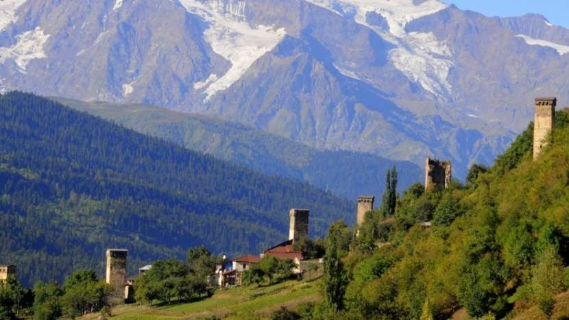
ספטמבר בגיאורגיה
חלק א'
בספטמבר 2015 החלטנו בעלי ואני באופן די ספונטני לטוס לגיאורגיה, למה? כי 1- תקופת החגים כלכך ארוכה השנה שזה חטא לא לנסוע ולנצל את החופש, ו-2- כי מדובר ביעד די זול.
אז לאחר בירור קצר קנינו כרטיסים לערב ראש השנה (13.9.15 עד 2.10.15)- 18 יום, שכרנו ג'יפ (או ג'יפון ליתר דיוק), קראנו כל פיסת מידע - באתר למטייל בעיקר, ויצאנו לדרך!
*לטיפים עברו לחלק ב'.
13.9 יום 1- הגעה:
בערב ראש השנה (13.9.15) בשעות הערב הגענו בטיסת ישראייר לטיבליסי, עם הנחיתה ולאחר שהצטיידנו בסים מקומי והחלפנו דולרים ללארי, יצאנו מהשדה לחפש מונית, "לחפש" זו לא המילה המתאימה כי כלל נהגי המונית באזור די מתנפלים עליכם, כך שלא חסר מוניות. בגיאורגיה דרך אגב, כל אזרח יכול להיות נהג מונית- אין צורך ברישיון מיוחד. לגבי המחיר (45-50 לארי) לא יותר!
תפסנו נהג (או יותר נכון הוא פס אותנו) ובמחיר של 50 לארי, הביא אותנו למלון שהזמנו מראש דרך BOOKING (כי השעה הייתה כבר 11 בלילה), כך שנשאר לנו רק ללכת לישון. קצת לגבי המלונות והגסטהאוסים בגיאורגיה- אם אתם מצפים למלון מפנק זה לא היעד בשבילכם. המלונות מעוצבים בצבעים מזעזעים לרוב, והמזרונים כנראה עוד מהתקופה הסובייטית! פשוט נוראיים (בכל מקום שישנו בו)! עד כדי כך שלפעמים מנסים למצוא תנוחה בין הקפיצים שנתקעים לכם בגב. אבל היינו עייפים מהטיסה (רק שעתיים טיסה אבל מעייף בכל זאת) אז ישנו טוב.
14.9 יום 2- בדרך לקווקז:
קמנו לבוקר שמשי ויפה, אכלנו ארוחת בוקר במלון (מכינים טרי טרי), אולם הארוחה די פשוטה. הרכב הגיע בדיוק בזמן אז לאחר שסגרנו את הניירת והתשלומים מול נציג החברה (GSS) יצאנו לדרך. שכרנו הונדה CRV אוטומטית. באנו מוכנים מהארץ עם מכשיר GPS אולם גילינו שאי אפשר לנווט בגיאורגיה עם GPS. הנציג המליץ לנו על וויז (אולם הזהיר שאין את כל המקומות), למזלנו הוויז זיהה את הדרך לקזבגי (stepantsminda- בשמה המקורי בגאורגית, ששונה לא מזמן) וממה שקראתי יש שילוט די טוב לכל האטרקציות שבדרך. אז לפני שיוצאים לקווקז נשאר לנו עוד דבר קטנטן וזה הצטיידות!
יצאנו מטיביליסי לכיוון קזבגי ומצ'חטה בכביש המוביל לכיוון הקניון של טביליסי (קניון גדול מאוד), מי שרוצה לעשות שופינג זה המקום בשבילו. אנחנו היינו צריכים סופרמרקט אז הצטיידנו בחטיפים, נייר טואלט (תמיד כדאי שיהיה ברכב), מים וסכין מטבח (כדי לחתוך אבטיחים!).
כרבע שעה מטביליסי אנחנו מגיעים לנקודת העצירה הראשונה- מנזר JVARI ממנו נשקפת תצפית מדהימה לעיירה מצ'חטה.
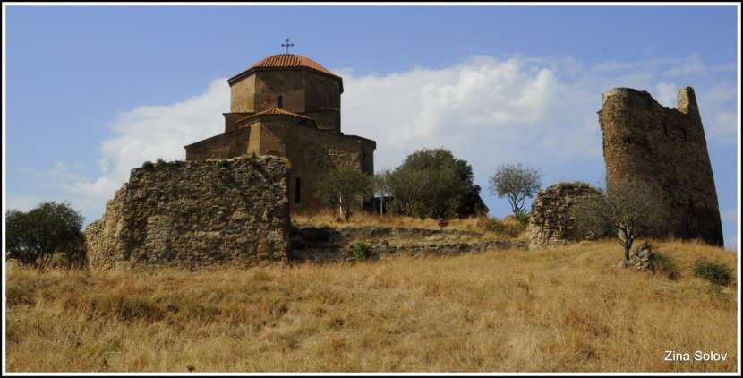
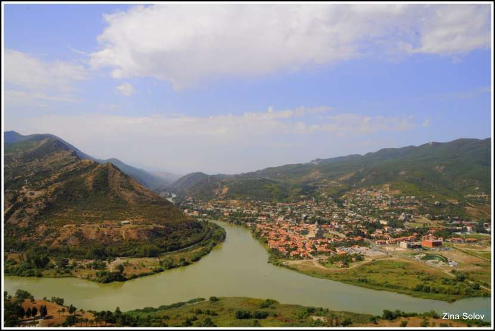
המנזר הוקדם במאה ה-6 לספירה ומהווה כיום אתר לשימור מורשת עולמית. בכניסה למתחם תמצאו דוכנים שמוכרים כל מיני מזכרות.
משם עלינו לכביש E117 לכיוון קזבגי (שימו לב שהשילוט הוא stepantsminda כמו שכתבתי קודם), התחנה הבאה הוא אגם בזלתי. מיד כשיוצאים לכביש עוברים דרך כפרים ועיירות קטנות כאשר בצידי הדרך יש המון דוכנים עם פירות, דבש וצ'ה צ'ה, אנחנו החלטנו להמשיך הלאה למרות הפיתוי של הפירות הטריים. כ-60 ק"מ אחרי JVARI יש שילוט שמאלה לאגם (אם פספסתם אפשר לעצור בדרך חזרה), מהפנייה שמאלה אנחנו נוסעים עוד כ-15 ק"מ דרך כפרים גרוזניים טיפוסיים, נוף ירוק והרי הקווקז באופק- מאוד יפה. ליד האגם יש אתר נופש שניתן לשכור שם סירה לשיט, אנחנו פשוט החלטנו לחנות על שפת האגם, לטבול במים הקרירים וליהנות מנשנוש צהריים.
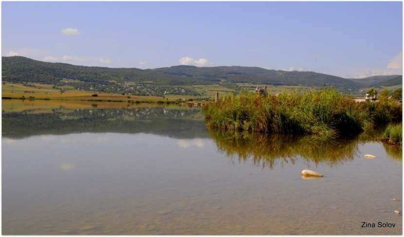
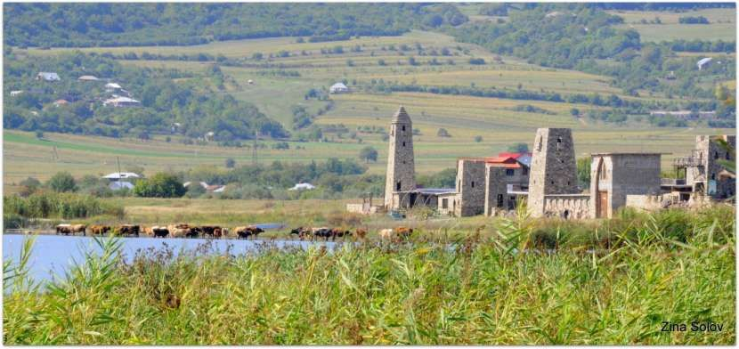
חוזרים לכביש הראשי וממשיכים בנסיעה, אחרי כעשרים דקות נגלה לעינינו אגם מרהיב בצבע טורקיז, זה בעצם אגם ז'ינוואלי היפיפה ומעליו מצודת אנאנורי המרשימה. אנחנו עוצרים לטיול סביב המצודה ולאכול גלידה, כי ממש חם היום, ורק אז קולטים את הגשר המפחיד שה הרגע חצינו.. ניתן לרדת עד לשפת האגם ולשכשך במים, כשבזמן ההליכה מלווים אותנו המון כלבים שמטיילים באזור (לא יודעת אם הם של מקומיים או כלבי חסרי בית, מה שכן הם יודעים לזהות את בעלי החולשה לכלבים ככה שלפחות שלושה מהם לא עזבו אותנו עד שנכנסנו שוב לרכב).
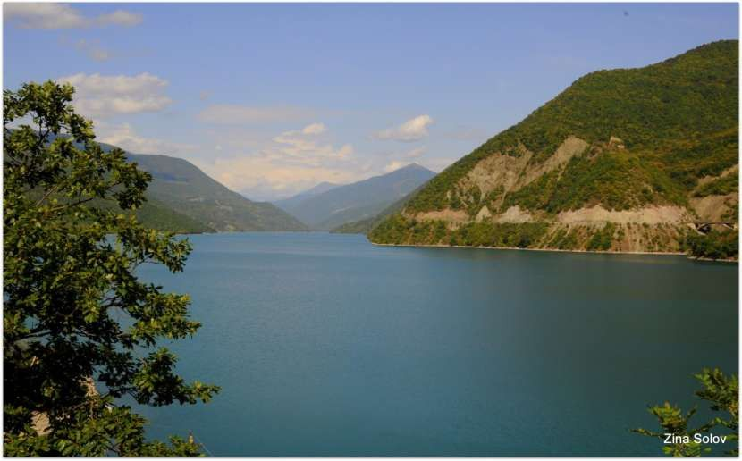
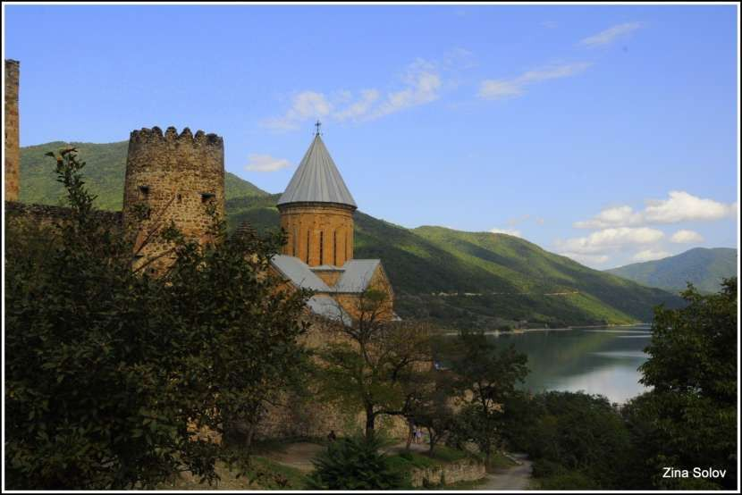
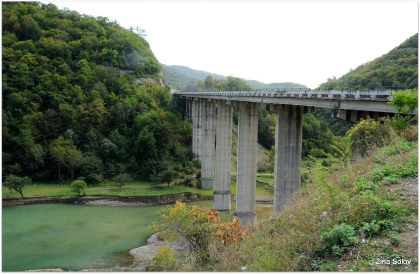
ממשיכים בנסיעה, אחרי המצודה הכביש כבר מתחיל להתפתל כלפי מעלה, הנופים מהממים, בדרך כפרים קטנים והמון פרות (שהולכות גם על הכביש עצמו ללא בושה), בכל כפר יש גם מסעדות שניתן לראותן כבר מהכביש המציעות אוכל גרוזיני (אגלה לכם סוד- כל המסעדות בגרוזיה מציעות אוכל גרוזיני זהה, אני חושבת שגם את התפריט לאנגלית תרגם אדם אחד ומכר לכל המסעדות במדינה כי בכולם התפריט זהה).
קצת תמונות מהדרך:
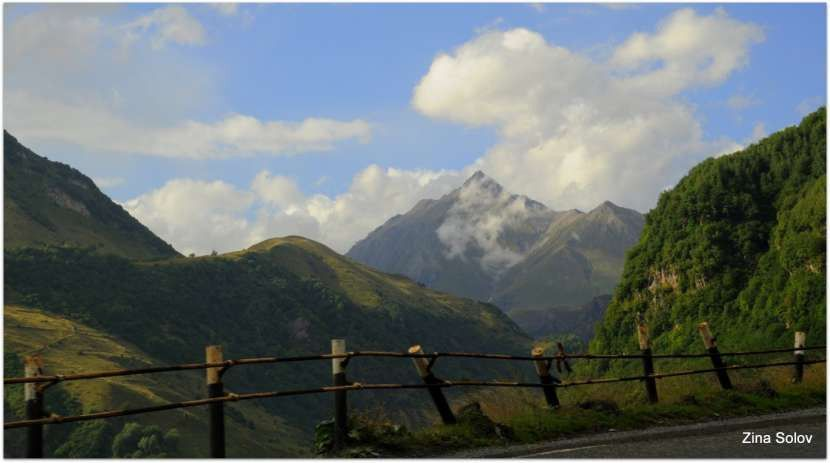
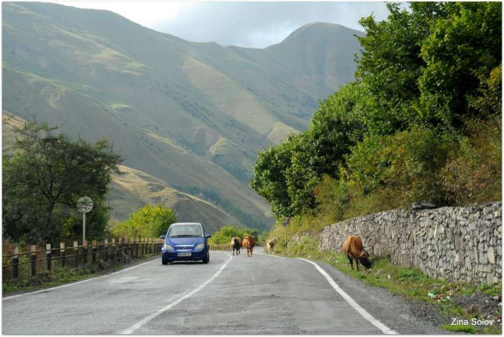
חולפים על פני העיירה GUDAURI שבחורף משמשת כאתר סקי, אולם די שוממת בקיץ. הנוף פשוט עוצר נשימה! כאן אנחנו עוצרים כל כמה ק"מ לתמונה. ממשיכים לנסוע לכיוון מעבר ההרים JVARI (2400 מ'), קצת לפניו נמצא מונומנט אחוות העמים- מבנה עגול על צלע ההר המייצג את ה"ידידות" של העם הגרוזיני והרוסי. עיקר האטרקציה זה הנוף המשגע של העמק והרי הקווקז, פשוט עוצר נשימה.
אתן לתמונות לדבר במקומי:
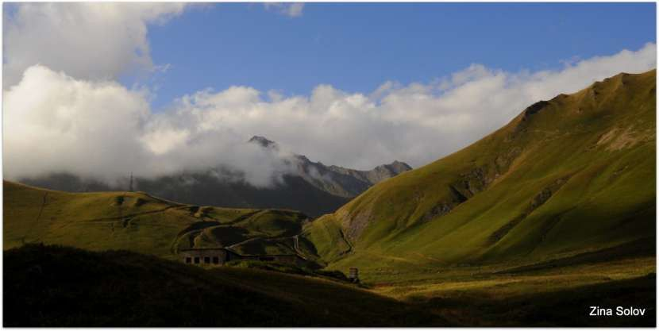
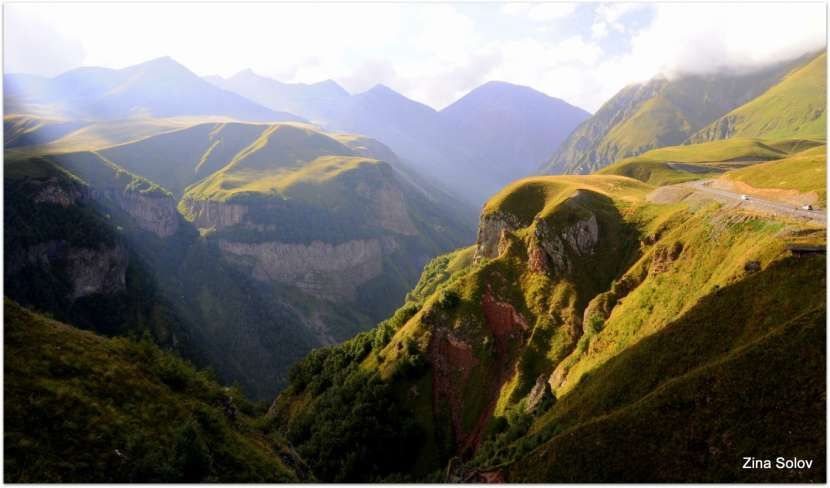
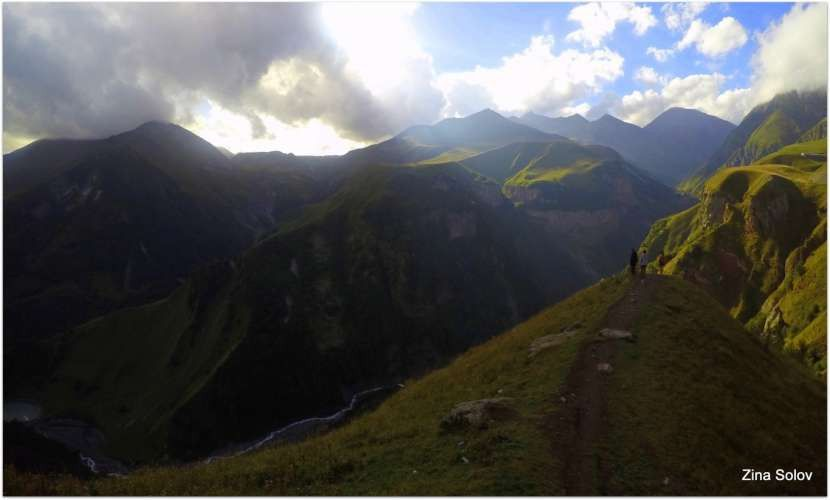
הכביש ממשיך להתפתל ויש אפשרות לנסוע במנהרות או ממש על צלע ההר, בהמשך הדרך מצד שמאל נמצא אתר נביעת המים המינראליים, מזהים בקלות ע"י הסלעים החומים-אדומים שנצבעו כך בגלל המינרלים בקרקע.
מיד כשעוברים את אתר נביעת המים אנחנו נתקלים בטור ארוך של משאיות שמלווה אותנו עד הכניסה לקזבגי. מסתבר שלא ניתן לנסוע בכביש באמצע היום אלא רק בלילה כך שכל המשאיות שבדרך לוולדיקווקז שברוסיה מחכות ללילה כדי להמשיך בנסיעה.
עוד נסיעה קצרה של כחצי שעה ומגיעים ליעדנו- העיירה קזבגי. העיירה בעצם מורכבת מ-2 עיירות- stepantsminda מצד ימין ו- גרגטי מצד שמאל של הנהר שם גם נמצאת הכנסייה המפורסמת Tsminda Sameda (כנסית השילוש הקדוש). ברקע מקדם את פנינו הר הקזבג (5047 מ') שפסגתו מכוסה שלג.
השעה כבר שבע בערב ואנחנו עייפים ורעבים, התחלנו לנסוע ברחובות הצרים של העיירה ולחפש מקומות לינה אך לא ראינו שילוט כלל, מסתבר שיש שפע מקומות לינה אולם המקומיים כנראה לא כלכך חזקים בשילוט. בסוף די התייאשנו ולקחנו חדר במלון קזבגי- ממש במרכז העיירה ליד המסעדות והנהר. החדר די פשוט בעלות 60 לארי. הוספנו עוד 30 לארי לארוחת ערב (לזוג), כמובן שהחדר בקומה העליונה במלון ואין מעלית. ארוחת הערב הייתה טעימה מאוד (כנראה שהיינו מאוד רעבים). בעיירה אין כלכך (בכלל) חיי לילה בעיר פרט ל-3 מסעדות שליד המלון, אנחנו מאוד אהבנו את "קפה 5047" (שזה הגובה של הר הקבג) ומתוך 3 הלילות שישנו בקזבגי אכלנו שם קבוע צהריים וערב.
והנה תמונה של כנסיית גרגטי והר הקזבג באופק:
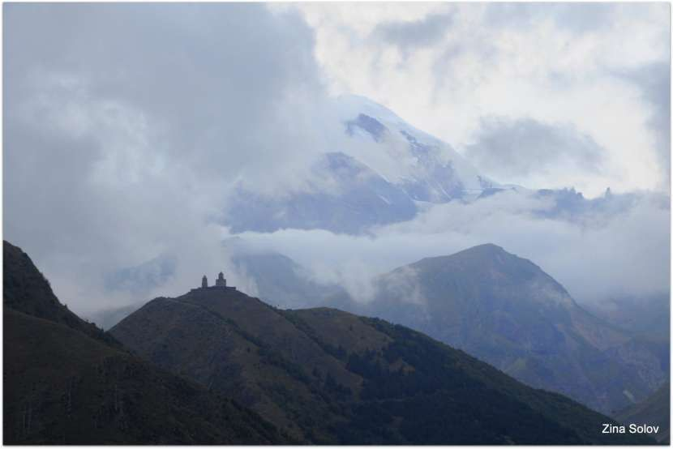
15.9 יום 3- מטפסים לכנסייה
קמנו לעוד בוקר שמשי ויפה, אלנו ארוחת בוקר במסעדה שליד המלון- חצ'אפורי מסורתי (בהחלט משביע מאוד, כמו פיצה ענקית הכוללת רק בצק וגבינה). עשינו צ'ק אאוט מהמלון כי העדפנו למצוא מקום יותר "אוטנטי" ללינה.
היום אנחנו עושים את המסלול לכנסיית גרגטי הנמצאת בגובה של 2170 מ'. ניתן להגיע לפסגה גם בג'יפ אבל הרבה יותר נחמד ללכת ברגל. מדובר במסלול של כ 4 ק"מ בעלייה. יש מסלול דרך היער עם עלייה תלולה יותר או שאפשר להאריך טיפה את הדרך וללכת בדרך הג'יפים ו"לחתוך" פיתולים. חנינו בעיירה גרגטי והתחלנו ללכת, השעה די מוקדמת - 8:30 כך שאין יותר מידי אנשים. אנחנו מתחילים ללכת בין בתי העיירה שנראים כאילו נלקחו ישירות מתקופת הקולחוז הרוסי, כשעוברים את העיירה הולכים דרך שטחי מרעה של פרות וסוסים ובכל מקום ערימות של חציר והר הקזבג ופסגתו המושלגת מתנשא מולנו.
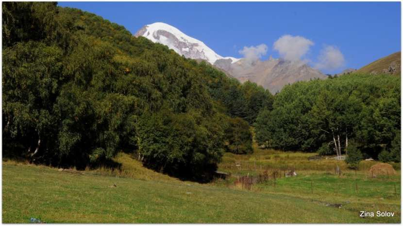
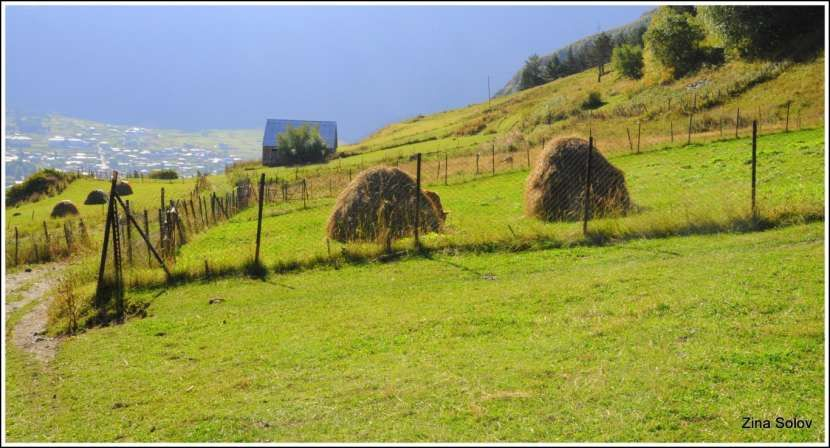
בהמשך התחברנו לדרך הג'יפים ונכנסנו ליער. עם כל עלייה ופיתול נגלה מבין העצים נוף העיירה והרי הקווקז- יפה ביותר. סך הכל לקח לנו כשעתיים להגיע לפסגה ושם נגלה לנו הנוף המפורסם של הכנסייה על רקע ההרים ומאחורינו הר הקזבג.
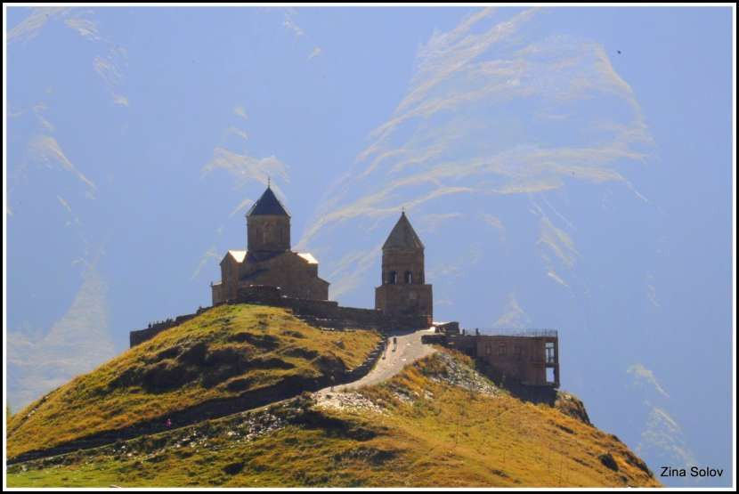
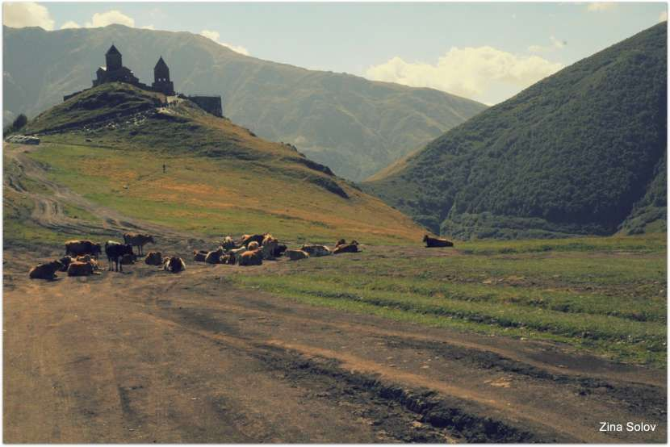
ניתן להקיף את הכנסייה וליהנות מהנוף המשגע של העיירה והרי הקווקז. מי שרוצה יכול גם להמשיך לכיוון התחנה המטאורולוגית וקרחון גרגטי, אנחנו ויתרנו על התענוג- היינו רעבים.
ירדנו חזרה לגרגטי ונסענו למסעדה כפרית ממש ביציאה מהעיר לכיוון ולדיקווקז. טיפ לגבי המסעדות בגאורגיה- לוקח הרבה אבל הרבה זמן עד שהאוכל מוכן ככה שכשאתם נכנסים למסעדה תתכננו לפחות שעה וחצי, ותזמינו ישר מה שאתם רוצים כי אם תרצו תוספת תצטרכו לחכות עוד זמן. ועוד נתון לגבי השירותים- ברוב המסעדות באזורים הכפריים השירותים הם "בול פגיעה" אמנם נקיים ומצוחצחים אבל עדיין- ראו הוזהרתם.
עוד קצת תמונות מגרגטי:
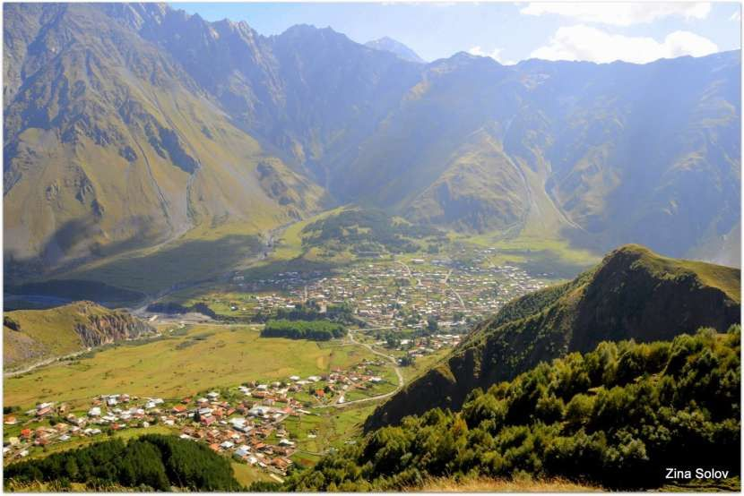
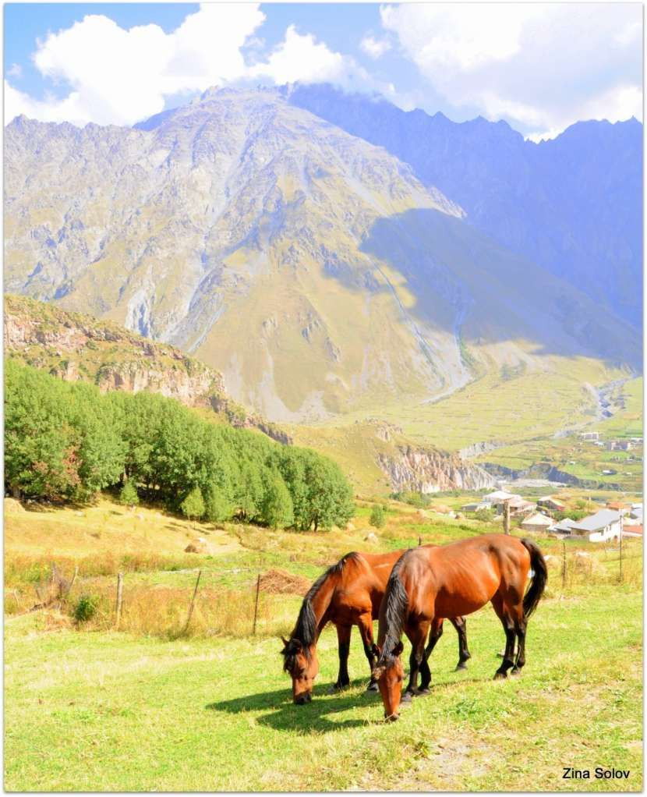
בשעה 14:00 נסענו לחפש מקום לינה בעזרת BOOKING ו-Google Maps. מצאנו גסטהאוס בחלק העליון של stepantsminda עם נוף לקזבג וכנסיית גרגטי בעלות של 60 לארי. לא לקחנו ארוחת ערב אבל הוספנו עוד 10 לארי לאדם עבור ארוחת בוקר.
וזה הנוף מהמרפסת:
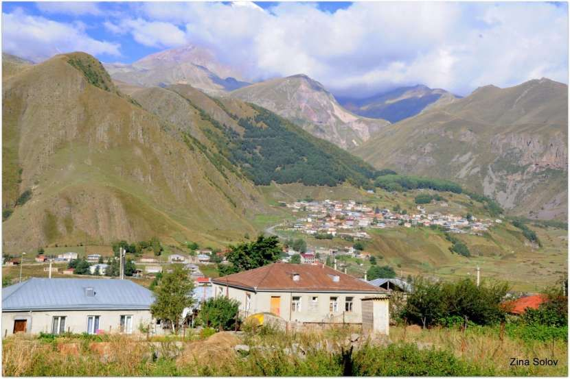
אחרי מקלחת ושנ"צ, קפצנו לשתות מרק בקפה האהוב עלינו (קפה 5047), התחיל לרדת גשם ככה שמרק וקינוח היה במקום. משם נסענו קצת ברכב לכיוון ולדיקווקז וחזרה לכיוון עמק סנו (שם נהיה מחר),הנוף ממש יפה למרות מזג האוויר הסגרירי.
בשבע בערב שוב מצאנו את עצמנו באותו הקפה אוכלים ארוחת ערב (אני אישית ממליצה על הפטריות עם הגבינה ופנקייק בננה). כשחזרנו לגסטהאוס גילינו שאנחנו לא האורחים היחידים והעברנו את הערב בשיחה נעימה עם תיירים צ'כים.
16.9 יום 4- טיול בעמק
בהתאם לתכנון (ולהמלצה של הצ'כים מאתמול) אנחנו נוסעים היום לטייל בעמק סנו. מזג האוויר פשוט מדהים, כך שאחרי ארוחת בוקר מפנקת ביותר (שבישלה בעלת הגסטהאוס) אנחנו יוצאים לדרך. נוסעים דרומה עד לכפר סנו (תראו שלט לפנייה שמאלה) עד כה הכביש סלול.
ברגע שעוברים את סנו מתחיל כביש עפר העובר לאורך הנהר, מסביב חיות משק- חזירים, חמורים, פרות מטיילות להן להנאתן.
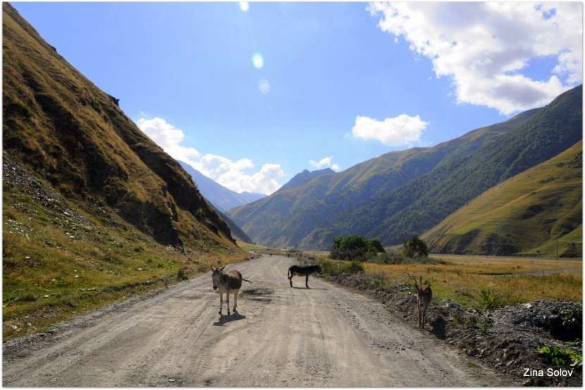
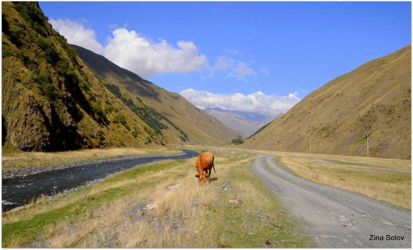
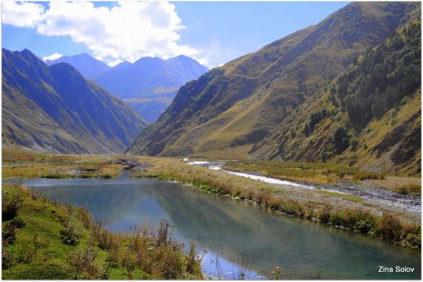
אנחנו ממשיכים לנסוע לכיוון רכס ההרים מולנו שם נמצא הכפר ג'וטה אליו ניתן להגיע רק בג'יפ ותכף אנחנו מבינים למה…
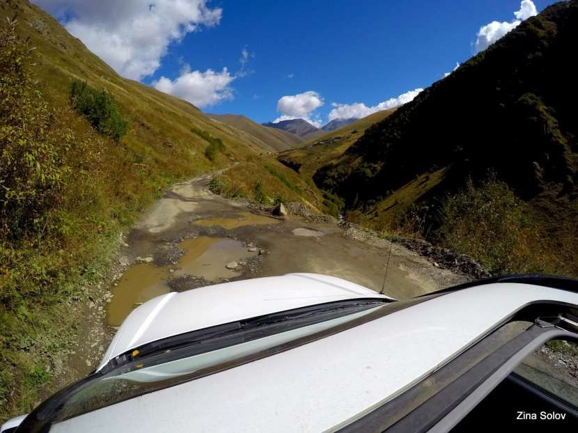
דרך העפר מתחילה להתפתל מעלה, ומהר מאוד אנחנו מוצאים את עצמנו נוסעים על שביל צר כשמימיננו תהום, הרגשה קצת מלחיצה אבל הנוף בהחלט מתגמל.
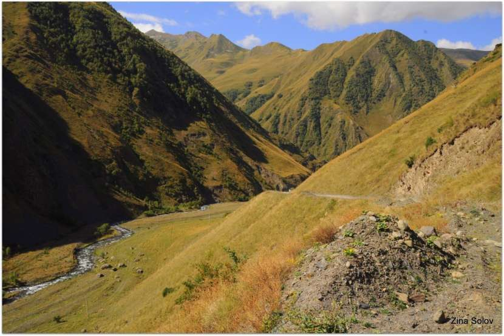
אחרי נסיעה לא ארוכה אנחנו סוף-סוף מגיעים לג'וטה. מדובר בכפר פצפון ודי מבודד, האוכלוסייה שם היא בעיקר קשישים, יחד עם זאת יש מלון די מרשים בכניסה לכפר (מה לא עושים בשביל תיירים).
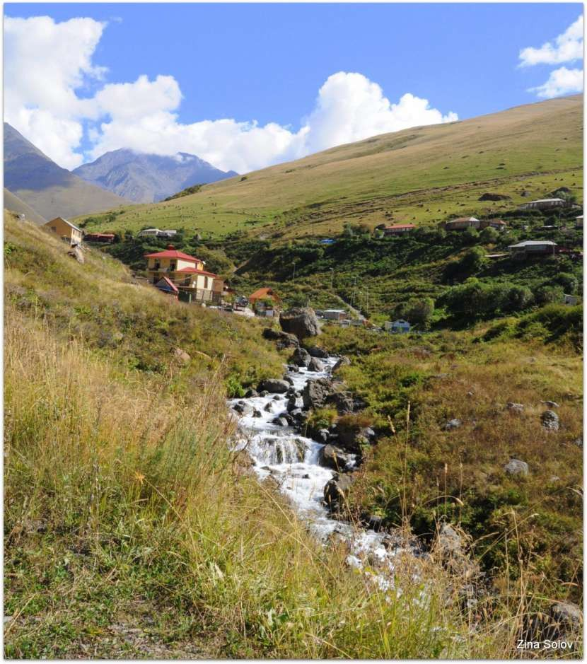
אנחנו מחנים את הרכב בחנייה ליד המלון (אמור להיות בתשלום אבל אף אחד לא בא לגבות את הכסף) ויוצאים למסלול.
כעיקרון המסלולים מתחילים מהקמפינג (זלטה) שנמצא קילומטר מעל הכפר, יש טיפוס די משופע עד לקמפינג אבל ברגע שעולים הנוף עוצר נשימה ושווה את המאמץ! הכל ירוק, מסביב הרים גבוהים, פסגות מושלגות ונהר זורם באמצע, פשוט מדהים!
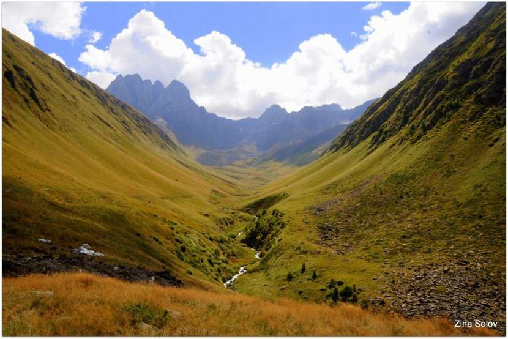
אנחנו עוברים את הקמפינג ומתחילים ללכת לאורך הנהר לכיוון הרכס ממול כמובן שגם פה לא חסר כלבים שבאים לקבל ליטוף (או מזון...), אנחנו מטיילים בנחת ונהנים מהנוף. ליד הנהר עצרנו לשכשך רגליים (המים קפואים) ולפיקניק קצר, אחרכך חצינו את הנהר והמשכנו ללכת. בדרך רואים פרות, סוסים פרפרים ומה לא, אבל העיקר זה השקט והשלווה התחושה היא שזה רק אתם והטבע.
זה מדהים לטייל בטבע עם סוסים שפשוט אפשר להתקרב אליהם ולצלם ככה מקרוב...
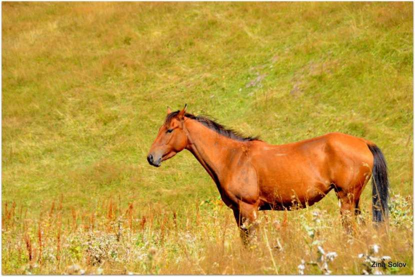
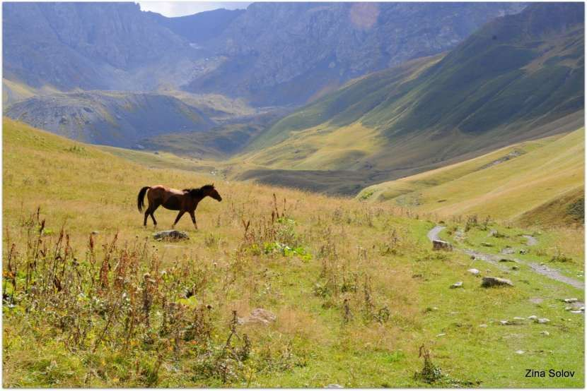
בגדול המסלול מוביל לקרחון ואגמים, אנחנו לא סיימנו אותו כי מזג האוויר החל להתדרדר ונהייה קר. עשינו אחורה פנה וחזרנו לכפר (מה גם שכבר ראינו המון קרחונים בטיולים הקודמים כך שלא בער בעצמוינו להמשיך ולהתקדם).
בכפר עצמו יש מסעדה אחת (נחשו איפה? במתחם המלון אלא מה), האוכל די סביר (היינו רעבים מאוד). אחרי הארוחה ירדנו חזרה לכיוון הכפר סנו, מזג האוויר היה מושלם ולכן החלטנו לעשות הפסקת רביצה קלה על גדת הנהר ולצפות בהרים המושלגים מסביב.
בתמונה- מצד שמאל זה הכביש המוביל לג'וטה.
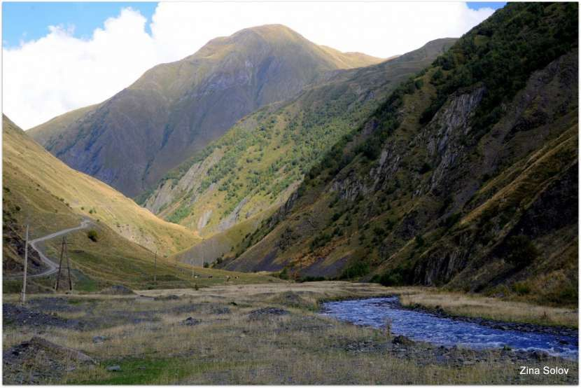
חזרנו לקזבגי בסביבות שש בערב, לא היה לנו כוח לחפש לינה אז שוב לקחנו לילה במלון קזבגי, במילא זה הלילה האחרון שלנו בעיירה, וסיימנו את הערב בקפה החביב שלנו (קפה 5047).
17.9 יום 5- טיול בעמק 2
ושוב אנחנו זוכים לבוקר קיצי במיוחד, אנחנו מורידים את המזוודות לרכב ועושים צ'ק אאוט. את ארוחת הבוקר אנחנו אוכלים במסעדה ה-3 במתחם (עדיין הקפה 5047 הכי טעים, אבל החלטנו לגוון). אחרי חצ'אפורי משביע במיוחד אנחנו עוזרים את קזבגי ונוסעים דרומה לטיול בעמק טורסו.
עמק טורסו זה העמק שגובל עם חבל אוסטיה הדרומית שבעבר היה שייך לגרוזיה אך לאחר מאבקם לעצמאות שהובילה למלחמת גרוזיה ורוסיה ב-2008 רוב הכפרים באזור ננטשו.
אנחנו נוסעים על כביש 117 ליוון גודאורי (בדיוק איך שהגענו לקזבגי) ובעצם אחרי שאתם עוברים את היישובים הסמוכים לקזבגי תהיה פניה ימינה לעמק (כשאנחנו היינו היו הרבה עבודות בניה ותשתית במקום), בכל אופן כדאי לנווט עם גוגל.
נכנסים לעמק יפיפה המוקף הרים, נוסעים עד הסוף ומגיעים לחניה. למי שאין ג'יפ יכול להחנות את הרכב וללכת ברגל (3 ק"מ עד הכניסה לעמק), גם אנחנו החלטנו ללכת ברגל.
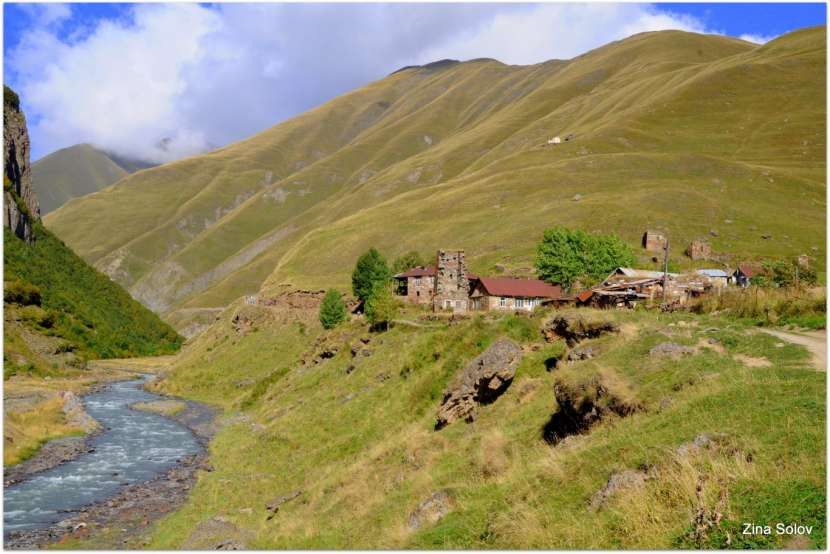
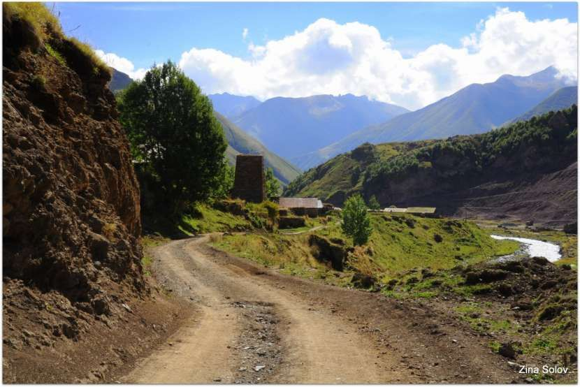
המסלול לא קשה בכלל, הדרך סלולה, כשמידי פעם עובר ג'יפ מטיילים או רכב של חקלאים מקומיים. המסלול עובר בגיא צר ולאורך הנהר, אחרי הליכה של כשעה (בחזרה לקח לנו 30 דקות אבל הלכנו בקצב מטורף) יוצאים מהגיא אל העמק המדהים! מצד ימין הנהר כשניתן לראות אדמה חומה אדומה לידו שזה המינרלים בקרקע, ממולנו הרים נישאים, שמיים כחולים והמוני פרות רועות באחו.
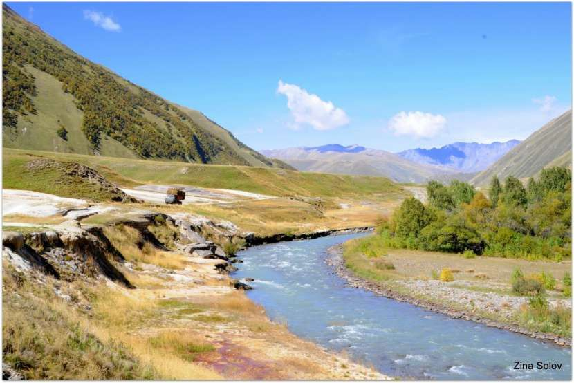
יש רק כיוון אחד ללכת וזה לתוך העמק ולאורך הנהר. משם ההליכה מאוד מישורית ודי חד-גונית, הולכים לאורך הנהר שמימין ומשמאל יש שדות. מהר מאוד נתקלים בנביעת מינרלים (הרבה יותר מרשימה מזו שנמצאת בדרך לקזבגי) ומזכירה מאוד את הנביעות שיש בטורקיה, אחרי הקטע הזה תצטרכו לחצות את הנהר (לא מאתגר במיוחד, אפשר אפילו להרטיב רגליים). משם הדרך מובילה לכיוון הכפרים הנטושים שנראים באופק.
אנחנו הגענו לכפר הראשון, אבל בעלי כבר איבד את הסבלנות להליכה (האמת גם אני התחלתי להשתעמם מההליכה המישורית בנוף יפה אמנם אך לא משתנה), ולכן החלטנו לעלות לגבעה ולעשות פיקניק (קנינו בבוקר פירות והכנו סנדוויצ'ים). ישבנו לנו בכיף על גבעה ירוקה ונהנינו משמש הקיץ והנוף היפה.
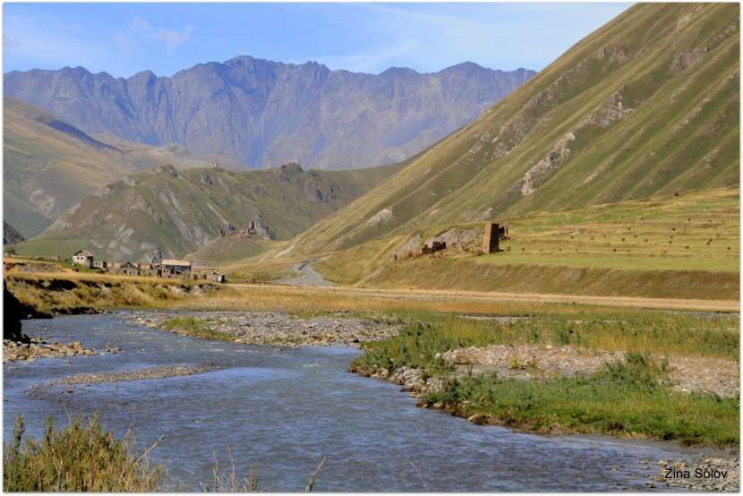
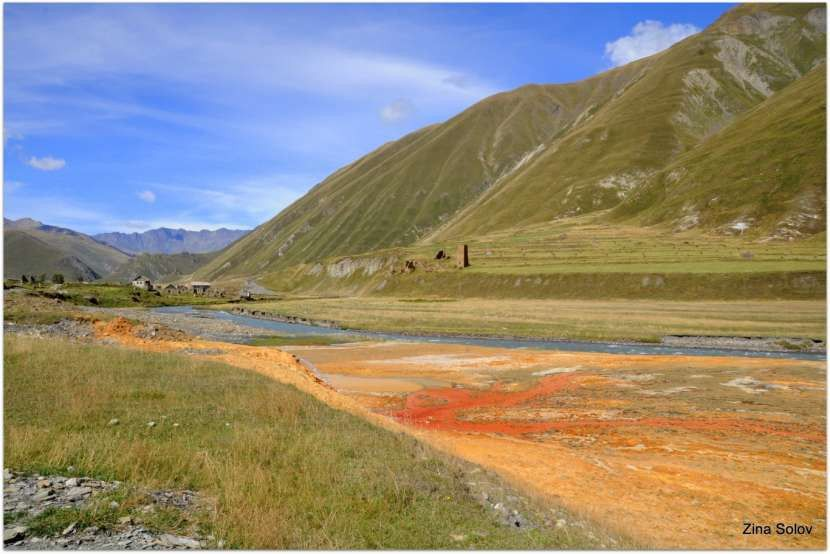
לא שמנו לב איך שהזמן טס והשעה כבר 14:00, צריך לחזור כי יש לנו עוד נסיעה ארוכה היום. בדיעבד עדיף והיינו עושים את הטיול בעמק עם הג'יפ- היינו רואים יותר, אבל נהנינו מאוד גם מטיול רגוע ברגל. בחזרה הלכנו כבר בקצב מהיר מאוד.
הגענו לרכב והתחלנו את הנסיעה חזרה לכיוון מצ'חטה שם תכננו למצוא לינה. זהו, עוזבים את קזבגי, התחושה היא שדי מיצינו את האטרקציות במקום.
הדרך חזרה לא פחות מהממת! הנוף פשוט עוצר נשימה! עשינו עוד עצירת צילומים ליד אנדרטת הידידות וקינחנו בגלידה בתחנת עצירה קצת אחרי גודאורי.
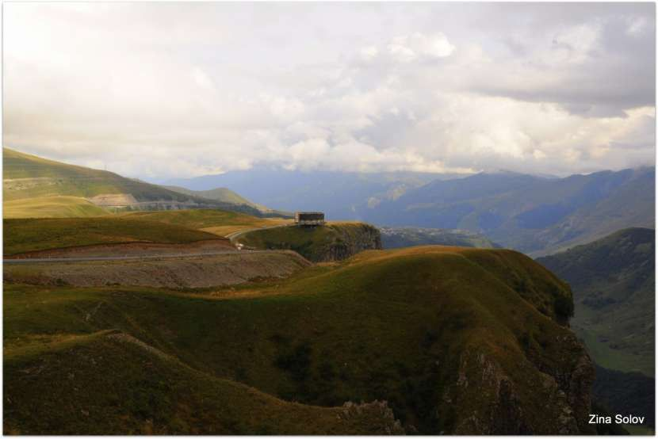
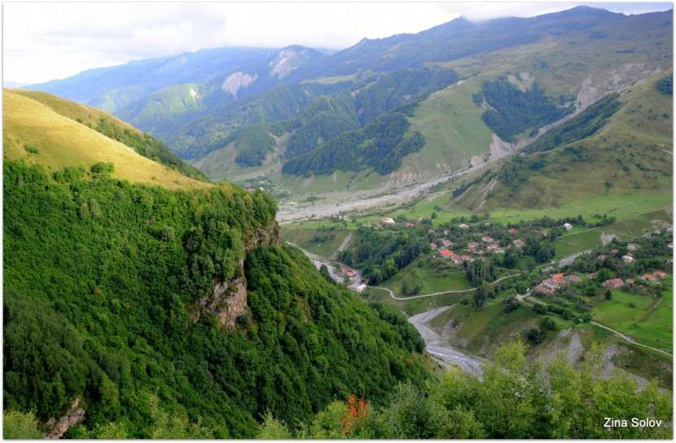
תכננו לאכול באחת המסעדות שראינו בדרך כשנסענו לקזבגי אבל אנחנו דווקא לא רעבים אז המשכנו בנסיעה.
לקראת שש בערב הגענו למצ'חטה אבל פתאום לא התחשק לנו לישון בעיר אז עשינו פרסה והחלטנו לחפש מקום לינה לאורך כביש 117 (ליד מצ'חטה יש המון מלונות שרואים מהכביש). מצאנו מקום נחמד בעלות של 40 לארי לזוג. מדובר במלון דרכים ככה שיש תעריף רק עבור לילה (מוזל יותר). לא רחוק משם יש מסעדה גרוזינית "אותנתית", שנראית יותר כמו אולם אירועים בארץ, אבל האוכל היה מעולה! שבעים ועייפים חזרנו למלון, מחר מצפה לנו עוד נסיעה ארוכה.
18.9 יום 6- ערים ומערות
היום אנחנו מדלגים לאזור קותאיסי (כ-3 שעות נסיעה). קמנו מוקדם, את ארוחת הבוקר החלטנו לאכול בדרך ואכן כשיצאנו לכביש המהיר בין טביליסי לקותאיסי אחרי כחצי שעה נסיעה נתקלנו בתחנת רענון. עצרנו לקפה ומאפה אולם כשחזרנו לרכב לתדהמתנו גילינו שיש לנו פנצ'ר! זה אחד הדברים המבאסים בטיול, למזלנו במתחם היתה פנצ'ריה כך שבעלות של 20 לארי הגלגל תוקן (ולא עש בעיות עד סוף הטיול).
הדרך לקותאסי בחלקה כביש מהיר ורחב אולם בהמשך מתחילים לעבור בתוך עיירות קטנות, מה יפה זה שבכל עיירה יש כנראה את המומחיות שלה כי עברנו בעיירה שהציגה המון ערסלים למכירה, באחרת רק לחם בשלישית רק דבש וממש לפני קותאיסי יש עיירה שמוכרת דברי חרס. כמובן שעישנו המון עצירות בדרך, לצילום, לנשנוש וסתם לשוטטות (בעיקר ב"שוק" החרס). הנופים בדרך היו מאוד יפים אם כי פחות עוצמתיים מהרי הקווקז, כאן בעיקר ראינו גבעות ויערות.
קותאיסי היא עיר די גדולה ולכן קודם כל נסענו לאטרקציה המרכזית בה וזה מערת פרומיתאוס. מדובר במערת נטיפים ענקית (כ-20 ק"מ) שניתן לבקר ב-1.2 ק"מ ממנה שהתגלתה לא כלכך מזמן. אי אפשר לטייל לבד במערה ויש להצטרף לקבוצה מאורגנת שיוצאת כל חצי שעה. עלות כניסה 7 לארי (פועלת כל יום מ-10 עד 17). ניתן לקנות כרטיס שכולל שיט בנהר תת קרקעי (אנחנו ויתרנו).
ממרכז המבקרים יורדים במדרגות לפתח המערה. ונכנסים פנימה, בהתחלה הכל חשוך ואז פתאום אתם נכנסים לחלל מואר, המערה מדהימה! הסיור הוא כשעה בו עוברים במספר היכלים המוארים באופן שונה ויפה, ובסוף יש מעין הצגה אור קולית, חביב ביותר. רק שימו לב כדאי לבוא עם נעליים סגורות וג'קט כי הרצפה מחליקה מאוד ודי קריר בפנים. אחרי המופע האור קולי מי שהזמין כרטיס הכולל שיט ממשיך במסלול אחר, בעוד שאנחנו מתקדמים ליציאה. שימו לב היציאה היא מכיוון אחר ויש אוטובוס שאוסף את כולם (גם אלה ששטים) ומחזיר למרכז המבקרים.
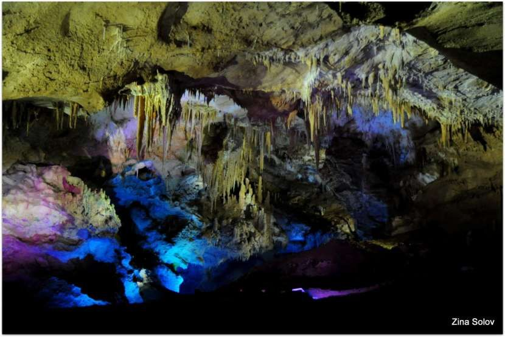
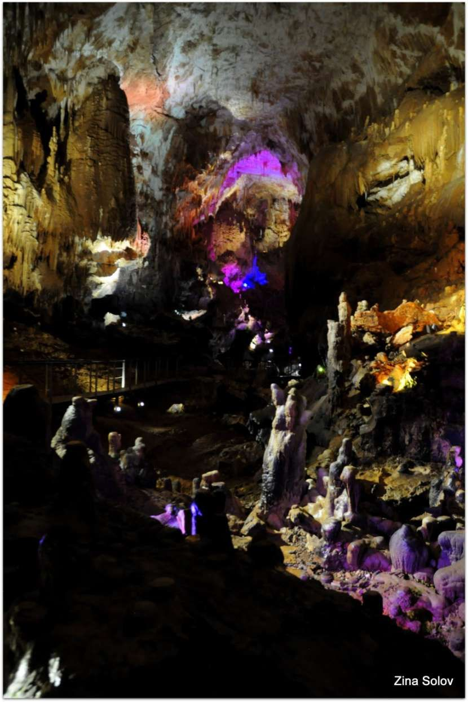
אנחנו רעבים, ממש ליד המתחם של פרומיתאוס יש מסעדה מקומית (ששוב נראית כמו אולם אירועים בארץ). אין להם תפריט באנגלית (מזל שבעלי קורא קצת ברוסית, כי אני בקושי מצליחה לחבר שתי אותיות יחד), אנחנו מתפנקים על הארוחה (קבבי כבש טריים, סלטים פשוט תענוג), המסעדה עצמה מעוצבת יפה מאוד- הכל מגולף מעץ- כיסאות, שולחנות, גדר, מזרקה וכל הקישוטים מסביב, מקום ממש יפה.
בתום הארוחה אנחנו מחליטים לנסות להספיק לשמורת סטפליה (בה יש טביעת רגל של דינוזאור) ויש שם גם מערת נטיפים. כניסה עולה 6 לארי. אנחנו מגיעים לשם בשעה 16:30 ומתבשרים שהשמורה נסגרת בשש ויש 2 ק"מ הליכה עד תביעות הרגל של הדינוזאור. אנחנו מעדיפים שלא לעשות את המסלול במהירות שיא (צריך לשמור משהו לפעם הבאה לא?) ולכן אנחנו נוסעים לקותאיסי לחפש מקום לינה.
העיר די סואנת, והנהגים הגרוזינים לא נחשבים לנהגים הכי טובים בעולם, כך שאנחנו כבר מתחרטים שנכנסנו לעיר, עשינו סיבוב סביב המרכז אבל המלונות או הגסט-האוסים לא נראה מזמינים בכלל.
בסוף מצאנו מלון ממש במרכז העיר (ליד הגשר)- old town (משהו כזה, תסלחו לי שאני לא ממש זוכרת), שנתנו לנו סוויטה ב-100 לארי ללילה (לא היה חדר אחר), קצת יקר אבל לא היה לנו כוח להמשיך לחפש. החדר די מרשים (יש סלון עם ספה, מרפסת וחדר שינה), אבל המיטה, אוי המיטה... כזה פאר ואז נשכבים על מיטת קפיצים כשכל קפיץ פשוט נתקע בגב! אם לרגע חשבנו שאנחנו במקום "מערבי" למיטות הגרוזיניות יש יכולת להזכיר לך מהר מאוד שאתה עדיין חצי רגל ב"קומוניזם הרוסי" (או כך לפחות אני קוראת לזה).
התמקמנו ויצאנו לסיבוב בעיר, העיר די יפה, יש נהר באמצע וסביבו מספר בתי קפה, יש גם פארק נחמד. אנחנו לא רעבים (אחרי הארוחה המפנקת מהמסעדה) אבל נהנים לשתות קפה ולאכול גלידה במסעדה על הנהר, זה ממש מול המלון ויש שם מוזיקה מצוינת. בהמשך הערב עברנו לקפה אחר- במצד השני של הנהר, שם נשנשתי פטריות עם גבינה וקוקטייל, וחזרה למלון, מחר עוד יום של נסיעה ארוכה לפנינו.
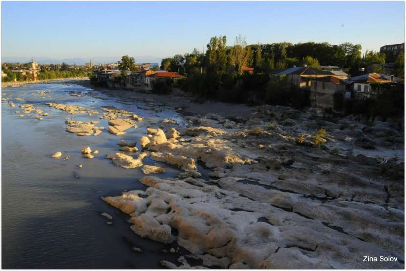
19.9 יום 7: תלויים מעל הקניון
היום אנחנו עושים את הדרך הארוכה למסטיה שבמחוז סוונטי, אבל לפני כן אנחנו רוצים לראות עוד קצת את איזור קותאיסי ולכן לאחר התלבטות בין טיול בקניון מרטוולי וקניון אוקטצה החלטנו על אוקצטה (Okatse Canyon). מדובר במסלול של 700 מטר שתלוי מעל הקניון, אטרקציה שנפתחה לפני שנה בלבד.
אנחנו יוצאים לדרך, מכוונים את גוגל לאתר ומתחילים בנסיעה בין הכפרים הקטנים של קותאיסי. הדרך עוברת בשדות חקלאיים ובין הגבעות. בשלב מסוים הקליטה נעלמת אבל יש רק דרך אחת ככה שפשוט תמשיכו לנסוע.
בסוף מגיעים למרכז המבקרים של האתר בו יש הסבר על הקניון ושם קונים כרטיס (8 לארי). ממרכז המבקרים יש מסלול של 2.5 ק"מ עד הרמפה התלויה, היום חם מאוד אז אנחנו מחליטים לנסוע בג'יפ (למי שאין ניתן לשכור הקפצה בעלות ל 30 לארי).
הדרך מאוד מאתגרת לג'יפון שלנו, ככה שלמי שרוצה לעשות את הנסיעה בג'יפ כדאי שתשכירו גי'פ יותר גבוהה כי היו שם עליות שבקושי רב הצלחנו לעלות...
לאחר נסיעה די מפחידה הגענו ליעד, ממש לפני הרמפה יש בקתה בה צריך להציג את הכרטיסים שקניתם, אחרת לא ניתן להיכנס, יש במקום גם שירותי בול פגיעה (ממליצה להימנע).
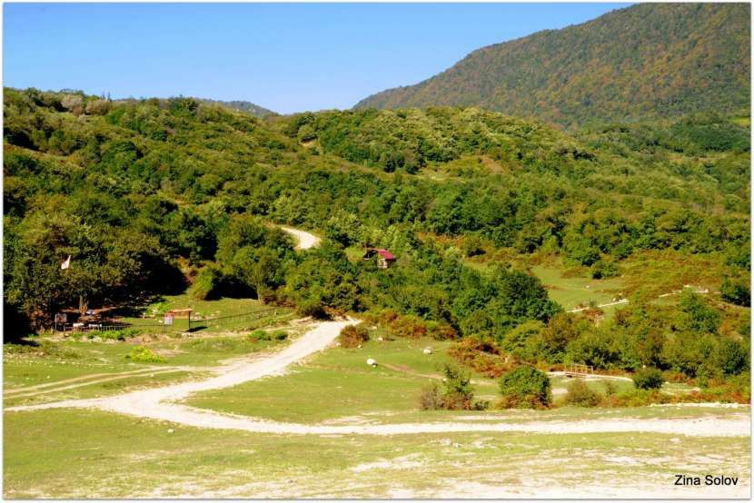
בהתחלה יורדים במדרגות ואז נגלה לכם נוף הקניון והגובה הרב של הרמפה שעומדים עליה! אנחנו פשוט תלויים באוויר מעל הקניון, מתחתינו יער ונהר שזורם. למי שיש פחד גבהים לא הייתי ממליצה על המסלול, אפילו אני שלא סובלת כלל מפחד גבהים החסרתי פעימה. לאחר הליכה של כ-700 מטר על הרמפה מגיעים לבמה שממש בולטת לתוך הקניון ממנה נשקף הנוף של האיזור והמסלול שעשינו. משם עולים חזרה והולכים לכיוון הבקתה, אנחנו נהנינו מאוד.
והנה התמונות:
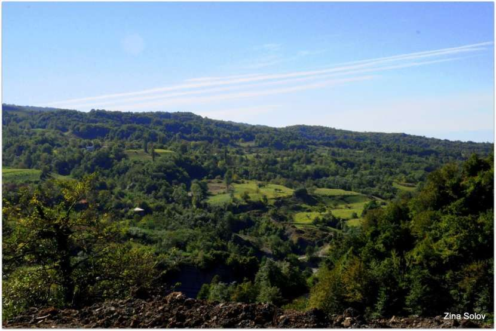
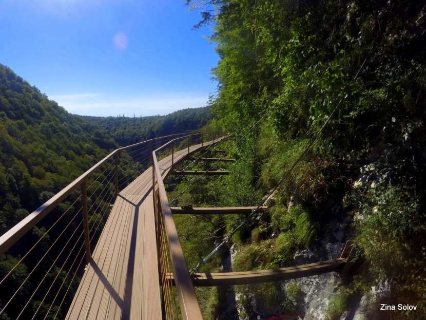
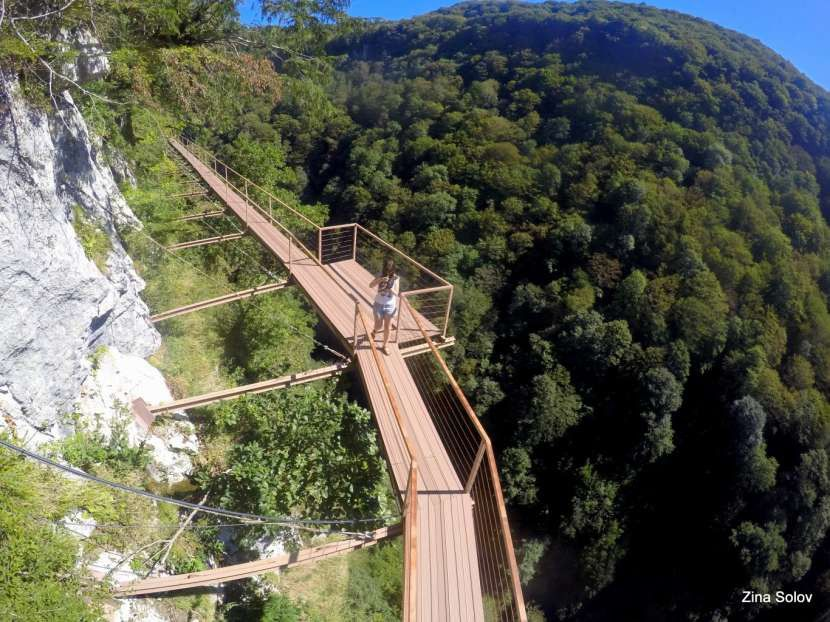
למי שמעוניין ניתן לעשות מסלול עד למפלים, צריך לנסוע עם הכביש ולעבור את מרכז המבקרים עד שהכביש נגמר ויש דרך עפר (בדיוק סוללים אותה). בינתיים לא ניתן לעבור שם עם הרכב ולכן מדובר בהליכה של כ-2 ק"מ לכיוון במעלה הגבעה. לצערנו אנחנו צריכים להגיע היום למסטיה ולכן די קצרים בזמן (השעה כבר 12:00) ואנחנו לא רוצים לנהוג למסטיה בחושך, טוב נו, אי אפשר להספיק את הכל...
מכוונים את הגוגל לעיירה זוגדידי (אוכל ותדלוק לפני מסטיה כי אחרכך אין תחנות דלק כלל) ומתחילים לנסוע שוב בין הכפרים הגרוזיניים שממש עושים חשק לקנות שם איזה בית בכפר לנופש...
ב-14:00 הגענו לזוגדידי, עיר די משעממת (למי שמגיע למסטיה ברכבת זו התחנה האחרונה ומכאן לוקחים מרשרוטקה למסטיה). אנחנו מוצאים מסעדה ואוכלים צהריים, מתדלקים וקונים גלידה ורד בול לנסיעה הארוכה שלפנינו. לפי הGPS מדובר בנסיעה של 3 שעות ויוצאים לדרך.
ההרים באופק הולכים ומתקרבים ולאחר נסיעה של חצי שעה התחלנו לטפס. מיד מקדם את פנינו סכר ואגם טורקיז יפיפה שמלווה אותנו חלק ניכר מהדרך. בגלל השעה המאוחרת אנחנו מחליטים לעצור בכל המקומות האלה בדרך חזרה וממשיכים בנסיעה תוך כדי התפעלות מהנוף. אנחנו חולפים על פני כפרים קטנים ומסעדות והרבה מלונות בהקמה, הנוף משגע, נוסעים צמוד לצלע ההר, משמאל האגם שבמהרה הופך לנהר כפרים משני הצדדים כשמחבר ביניהם גשר חבלים בלבד, ממש תחושה של חזרה בזמן.
קצת תמונות מהדרך:
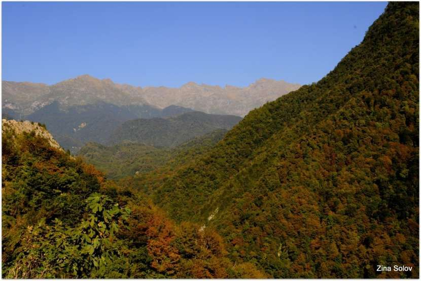
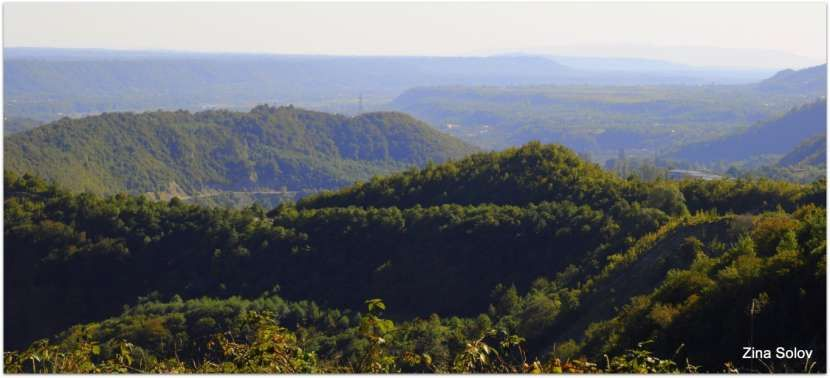
אגב הכביש די מסוכן כי מעת לעת נופלות אבנים מההר ישר על הכביש, סעו בזהירות! הדרך די קשה ומפותלת ודורשת ערנות כך שאחרי שעתיים אנחנו עושים עצירה ליד הנהר כדי לנוח מעט. לפי ה-GPS עברנו חצי דרך.
מהר מאוד אנחנו מתחילים לעלות להר ורואים את הפסגות המושלגות של רכס הקווקז (מצפון זו שמורת אושבה והגבול עם רוסיה), המוני כפרים קטנים פזורים בעמק ובכל כפר יש מגדל אופייני לחבל סוונטי.
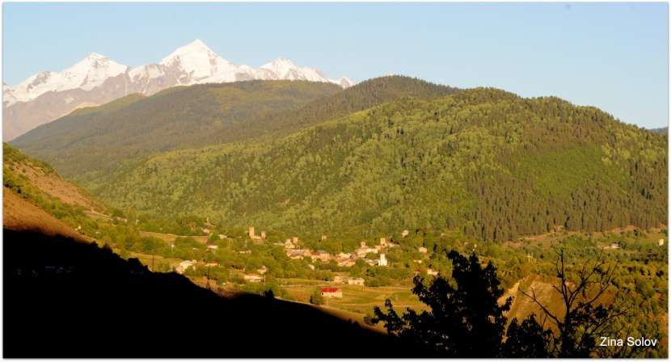
בשבע וחצי אנחנו סוף סוף מגיעים למסטיה ולמזלנו בכניסה לעיירה יש 2 תחנות דלק (כפי שאמרתי אין שום תחנת דלק בין זגודידי למסטיה אל תשכחו לתדלק בזוגדידי!), ואנחנו מתחילים במשימה של חיפוש מקום לינה, פותחים את BOOKING ומסתכלים, כך הגענו לגסטהאוס SWAN HOUSE מקום חביב מאוד שממוקם בבניין ישן מהמאה ה-12 שהבעלים הוסיפו לו קומות והפכו אותו למודרני. החדר די פשוט אבל נקי, גם השירותים והמקלחת מעולים. אנחנו עייפים מכדי לחפש עוד מקומות אז אנחנו נשארים לפחות ללילה (בעלות 60 לארי כולל ארוחת בוקר). הבעלים מאוד נחמדים וממליצים לנו על הרבה סלולים וטיולים באיזור.
אנחנו רעבים אז יוצאים לסייר בעיר ולחפש מסעדה. כבר חושך בחוץ וזה מקנה אווירה מיוחדת לעיירה שחשוכה ברובה למעט תאורה בכביש הראשי וכן כל המגדלים שלה מוארים, התחושה כאילו מהלכים בעיר מימי הביניים.
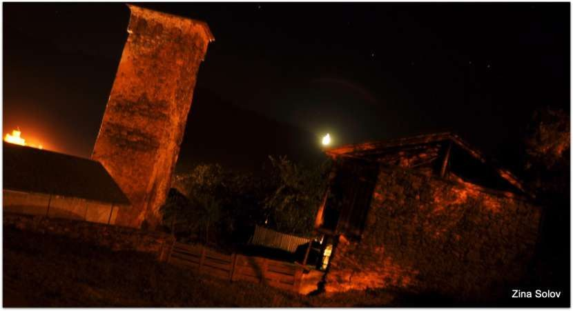
כשיוצאים לרחוב הראשי יש המון מסעדות, גסטהאוסים וכן חנויות מזכרות, אנחנו אוכלים במסעדה של גסטהאוס USHBA (די טובה נאכל שם עוד כמה פעמים). אחרי האוכל אנחנו עושים סיבוב בעיירה שכבר די שוממת (למעט כמה פרות וכלבים) וכן מטיילים קצת ליד המגדלים. עייפים ומרוצים אנחנו פורשים לישון.
ספטמבר בגיאורגיה (טיול עצמאי בג'יפ) - חלק ב'

Bagii
30/04/2016 עודכן: 05/05/2016
1,844
14
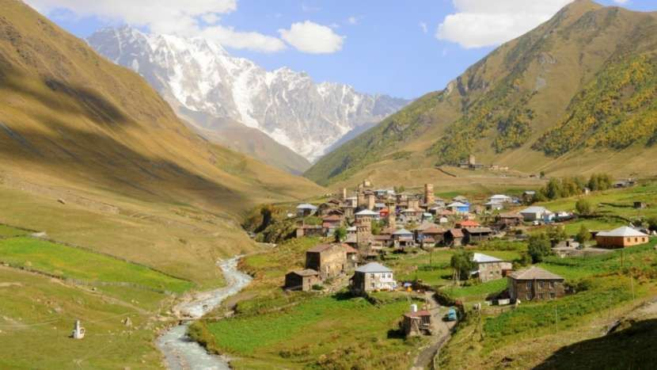
ספטמבר בגיאורגיה
חלק ב'
לחלק הראשון לחצו כאן.
20.9 יום 8: מחלת גבהים
זכינו לארוחת בוקר מפנקת מאוד, עד כדי כך שמיד החלטנו להישאר את 3 הלילות הבאים באותו המקום. היום אנחנו מתכננים לעלות עד לאגמים הקפואים (קורולדי), אבל בגלל שקמתי עם קלקול קיבה החלטנו שנעשה חצי מהדרך בג'יפ- עלייה עד הצלב שמעל העיירה, שעד אליו מדובר בהליכה של כמה שעות טובות (בעליה) וממנו נמשיך ברגל עד האגמים- עוד כ-3 ק"מ בעלייה.
לאחר שביררנו עם בעלי המקום שהג'יפ שלנו אכן מסוגל להגיע לשם (מסוגל להגיע עד הצלב אבל לא עד האגמים), אנחנו יוצאים לדרך.
קצת על מסטיה- זוהי העיירה הראשית של חבל סוונטי, החבל המבודד ביותר בגיאורגיה ומפורסם בזכות המלח שלו ששמים בכל תבשיל במקום, וכן בזכות המגדלים שלו מתקופת ימי הביניים. ניתן להגיע למסטיה ברכב או בטיסה מטביליסי (יש שדה תעופה ליד העיירה אם כי הטיסות לא ממש סדירות, אולם המחיר די נוח).
אנחנו יוצאים לדרך, נוסעים כיוון שדה התעופה ע"ש המלכה תמר (המלכה המפורסמת של גיאורגיה מימי הביניים), מיד אחרכך חוצים את הגשר (פונים שמאלה), פניה ימינה ושוב שמאלה ומתחילים לטפס. הדרך מאוד מאתגרת, מדובר של שביל צר כשמצד אחד ההר ומהצד השני התהום, אבל הנוף פשוט משגע, במיוחד כשרואים את העיירה עם המגדלים שלה על רקע ההרים המושלגים והשדות הירוקים. בדרך אנחנו גם חולפים על פני פרות וחזירים וכמובן שעוצרים בכל רגע לצילומים.
יצאנו מוקדם כך שבחלק הזה אין בכלל אנשים (מי שיצא מוקדם הולך ברגל והם עוד לא הגיעו לגובה הזה). אנחנו עוברים את הצלב ומתקדמים עוד קצת, לבסוף אנחנו חונים ויוצאים להליכה. האוויר פשוט צלול, מזג האוויר מדהים והנוף עוצר נשימה!
התחלנו ללכת, כמובן שהמסלול בעלייה, ברגע שעולים על גבעה אחת מיד יש עוד אחת, אולם אחרי העלייה הראשונה אני מרגישה שאני תכף מתעלפת, בהתחלה אני חושדת שמדובר בקלקול קיבה ולכן יושבת לנוח ושותה הרבה מים. אבל אחרי כקילומטר של הליכה אני מרגישה שמשהוא לא בסדר, אמנם המסלול לא קל, אבל עשינו יותר קשים. בעלי החליט לראות אם אנחנו קרובים לאגמים אז הוא התקדם קצת קדימה בעוד שאני נשארתי לנוח וליהנות מהנוף. הוא חזר בלי בשורות טובות- עלייה אחרי עלייה באופק ולא רואים את האגמים. בשלב הזה אנחנו מחליטים לוותר על האגמים הקפואים להיום (יש לנו עוד 3 ימים פה אז נעשה אותם כשארגיש טוב יותר).
אנחנו יורדים חזרה לכיוון הצלב וצופים משם על העיירה (יחד עם החזירים והפרות שמארחים לנו חברה).
החלטנו לנצל את שאר היום ולעשות את המסלול לקרחון צ'לאדי שאמור להיות מישורי ומוצל.
גם לצ'לאדי ניתן להגיע ברגל מהעיירה- הולכים לכיוון שדה התעופה וממשיכים עם השביל (כ-8 ק"מ עד הקרחון). אנחנו הגענו עם הגי'פ עד החנייה. במתחם יש קיוסק שניתן לשתות תה, קפה או בירה, המוכרת מזהירה אותנו מפני דב קטן שחי בפארק ושאם נראה אותו שלא נבהל. מדובר בדובון שהרנג'רים הצילו מהעיירה אושגולי, שם היו 2 דובונים קטנים שחיו אצל נזיר שגידל אותם עד שיהיו בוגרים ואז ישוחררו לטבע, אחד הכלבים בעיירה פשוט טרף את אחד הדובונים אז את השני העבירו לשמורה בצ'לאדי כדי שלא יפגע בהמשך בכלב (לדובים זיכרון טוב ומכאן החשש), לפחות זה הסיפור שסיפרו לנו.
המסלול מתחיל בטיפוס על גדר וחציית גשר ואז נכנסים לתוך יער. בסך הכל המסלול מוצל ומאוד מישורי מצד שמאל יש את הנהר שיוצא מהקרחון. אנחנו הולכים להנאתנו ופתאום מבחינים בדובון, כמובן התרגשות אוחזת בכל התיירים במקום שממהרים לצלם את הדוב, מסכן הדובון הוא רק רוצה לטייל בטבע... הדובון כלכך נלחץ מתייר אחד שפשוט דיבר בכל רם עד שהוא החליט לשרוט אותו (מקרוב הציפורניים שלו נראות מאוד חדות ומאיימות). אנחנו ממשיכים ללכת והדובון רץ לא רחוק מאיתנו ומידי פעם משכשך בנהר, כשהגענו לקבוצת אנשים שישבה בקרחת היער ואכלה הדובון לא היסס וניגש "לבקש" אוכל- עד שהרנג'ר סילק אותו משם (מסתבר שהרנג'ר הוציא אותו לטיול).
מקרחת היער כבר ניתן לראות את הקרחון, מי שרוצה יכול לטפס ולהגיע ממש עד הקרחון (על אחריותו, זה די מסוכן כי קרחון כל הזמן זז וניתקים ממנו סלעים). אני חייבת להתוודות שאחרי הקרחונים של איסלנד ונורבגיה הקרחון הזה לא כלכך מרשים, אבל המסלול עדיין מאוד מהנה- קליל ומוצל ליום חם וטוב כדי להעביר כמה שעות בנעימים בטבע. ישבנו קצת על שפת הנהר (המאוד קפוא! למי שתכנן לשחות שם לא מומלץ...) והתחלנו לחזור חזרה.
הגענו לרכב בשעה ארבע וחצי, די רעבים אז חזרנו לעיירה למצוא מקום לאכול צהריים, בגלל הרעב לא היה לנו כוח לחפש מסעדות אז נכנסנו שוב ל-ushba לארוחת צהריים מפנקת ביותר. משם חזרנו לגסטהאוס למנוחת צהריים.
בערב, אחרי עוד סיבוב בעיירה לצורך קניית מזכרות:), ישבנו קצת עם המארחים, והחלטתי לשאול לגבי הגובה של האגמים (עלה בי החשד שהתסמינים שלי היו אולי קשורים יותר לגובה ולא לקלקול הקיבה מה שהסתבר כנכון).
מסטיה שוכנת בגובה של 1500 מ', הצלב נמצא עוד 900 מ' מעל העיירה והאגמים עוד כ-700 מ' (סה"כ גובה 3100 מ')- פרט שלא כלכך לקחנו בחשבון בבוקר. מסתבר שפיתחתי מעין מחלת גבהים... לכן החלטנו שאת האגמים נעשה בנסיעה בג'יפ של המארחים מחרתיים (הם יארגנו קבוצה וייקחו אותנו). אבל מחר ניסע לאושגולי!
21.9 יום 9: אושגולי
עוד יום יפה מקדם את פנינו, ואחרי עוד ארוחת בוקר מפנקת אנחנו יוצאים לאושגולי. בגדול כדי להגיע לשם צריך ג'יפ (אולי אפילו גבוה משלנו) אבל אם נוסעים בזהירות הדרך לא כזאת נוראית כמו שחושבים והג'יפון שלנו עובר בלי שום בעיה.
אושגולי הוכרז כאתר שימור מורשת עולמית, זה הישוב הכי גבוהה באירופה 2400 מ', ובחורף הוא מבודד לגמרי. משך הנסיעה ממסטיה עד לאושגולי הוא כשעתיים וחצי- שלוש. למי שאין ג'יפ ניתן לקחת טיול יום במרשרוטקה (כל גסטהאוס מציע שירות כזה), וכמובן שאפשר גם ללכת- טרק של 4 ימים דרך הכפרים בסביבה.
אנחנו מתדלקים (לא ידוע אם יש תחנת דלק בדרך), קונים נשנושים ויוצאים לדרך. בהתחלה מדובר בדרך סלולה ומצוינת שבעצם מובילה לאתר סקי של מסטיה, אנחנו עוצרים לתצפית על העמק. בהמשך הדרך הופכת לדרך עפר. אנחנו עוברים בין כפרים קטנים וציוריים, המון פרות וחזירים ובאופק רואים את הפסגה הלבנה של הר שחארה (הגבוה ביותר בגיאורגיה).
אנחנו נוסעים לאורך הנהר בכביש צר, מעת לעת עוצרים למנוחה ולשכשוך במים. האטרקציה הראשונה בדרך היא מגדל האהבה- מגדל סוונטי שניתן לעלות למעלה, אנחנו נעשה זאת בדרך חזרה כי עצרו שם 2 מרשרוטקות עם תיירים אז החלטנו לא להצטופף.
הקטע האחרון של הכביש ממש לפני העיירה די מלחיץ כי נוסעים בתוך נקיק צר כשמימין תהום עמוקה ובה זורם הנהר ומשמאל צלע ההר עם סלעים שכל רגע יכולים ליפול לכם על הראש, כמו שאמרתי קצת מלחיץ.
הגענו לאושגולי ב-11 בבוקר והנוף פשוט עוצר נשימה- אתן לתמונות לדבר במקומי…
בגדול אין מה לעשות באושגולי למעט מסלולי הליכה. בעיירה יש מוזיאון קטן על החיים אבל לא נכנסנו אליו. למי שרוצה יש מסלול להר שחארה שאורכו כ-12 שעות, מה שכמובן לא עשינו. במקום זאת עברנו את העיירה והלכנו לכיוון הר שחארה. הגענו לנהר ושם עצרנו לפיקניק. לידנו רעו פרות וסוסים, המון פרפרים התעופפנו מסביבנו ואפילו הצלחנו לראות צפרדע בתוך המים.
חזרנו לעיירה ושם ישבנו לשתות בירה בקיוסק (אין מסעדות רק קיוסקים), מהר מאוד התחלנו לשוחח עם בעל המקום (היתרון בידיעת רוסית) שסיפר לנו קצת על החיים בעיירה, על כך שבקיץ מצטיידים לקראת החורף, בחורף אוכלים רק בשר (חזירים בעיקר) ושותים צ'ה צ'ה (משתכרים) ומשתעממים בטירוף כי לא ניתן לנסוע לשום מקום כי הדרכים חסומות. לכלבים יש תפקיד חשוב בשמירה על חיות המשק מפני זאבים ודובים ולכן המקומיים מאוד לא אוהבים את הטרנד הקיים של תיירים שמרחמים על הכלבים המשוטטים שהולכים איתם בטרק ואז מגיעים לאושגולי ועוזבים אותם ואותם כלבים בגלל רעב אחרכך פוגעים בחיות המשק. הוא גם סיפר שבשנה האחרונה היתה מגפה שהרגה כמעט את כל החזירים בעיירה (באמת לא ראינו חזירים בכלל באושגולי).
בשעה שלוש אנחנו יוצאים חזרה, עצרנו במגדל האהבה (עכשיו הוא ריק לגמרי) ואנחנו מטפסים עד למעלה, לא שיש משהו מיוחד במגדל אבל אם אתם כבר בסביבה כדאי להיכנס ולו כדי לסמן וי (עלות של לארי אחד). האגדה אומרת שזוג שנכנס לשם יאבה לנצח :)
בחמש וחצי מגיעים למסטיה ועוצרים במסעדת נלה שם ניתן להשאיר כיתוב על הקירות של המסעדה כמזכרת. בגדול המקום די תיירותי והומה אבל האוכל טעים (כמו בכל מקום אחר בינתיים).
עייפים חוזרים לגסטהאוס לנוח. בערב אנחנו שוב משוטטים בעיירה אבל מרגישים שדי מיצינו את מסטיה.
22.9 יום 10: ביי ביי להרים
אנחנו פותחים את הבוקר בנסיעה לאגמי קורולדי (מה שלא הצלחנו לעשות ברגל ביום הראשון), אנחנו קבוצה של 5 אנשים כך שיצא מחיר של 20 לארי לזוג (לא נורא). נוסעים שוב בדרך זה נסענו לפני יומיים, עוברים את הצלב ואת המקום בו חנינו פעם שעברה, ואז מגיעים לשיפוע מטורף! אין מצב שהג'יפ שלנו היה עובר את זה זה לפחות 40 מעלות שיפוע! גם הג'יפ הזה מוחה בתוקף ומד החום עולה למקסימום, אני בטוחה שתכף נתקע... למזלנו מיד אחרי השיפוע מופיעים האגמים.
טוב אגמים זה תיאור מוגזם, יותר כמו שלוליות, 3 שלוליות גדולות! אבל הנוף פשוט משגע!!! מרגישים כמו כל גג העולם! מסביב פסגות מושלגות, למטה העיירה ושדות ירוקים, מסביבנו פרות רועות והתחושה כאילו ניתן עוד רגע לגעת בעננים שמעל.
אנחנו מטיילים במקום כחצי שעה (הנהג מחכה לנו) ומשם נוסעים לצלב לעוד תצפית על העיירה והסביבה. ממול רואים את הרכבל שתמורת 5 לארי ניתן לעלות לשם ולטייל באזור ההוא של אתר הסקי (עברנו ליד אתמול בדרך לאושלוגי).
ירדנו חזרה למסטיה, נפרדנו מבעלי הגסטהאוס הנחמדים והחלטנו לרדת מההרים ולנסוע לים השחור. בהתחלה חשבנו לטייל עוד לאתר הסקי והרכבל אבל די מיצינו את העיירה והנופים אז החלטנו לעשות את הנסיעה על הבוקר כשרעננים כי הדרך ארוכה ויש הרבה תחנות עצירה שרצינו לעשות עוד בהלוך.
בדרך עצרנו לקפה ותה בקיוסק מאולתר ליד מפל חמוד, בהמשך עצרנו לחצ'אפורי, עצרנו ליצלום ליד אגם הטורקיז ולקינוח הסכר המרשים!
כיוונו את הGPS לעיירה פוטי לחופי הים השחור (הגבול עם אבחזיה- שלשם לא כלכך מומלץ להגיע). הדרך מישורית ועוברת בהמון כפרים קטנים, נהרות, חיות משק ובהתקרב לפוטי אפילו מסילת רכבת!
פוטי זו עיר נמל ועיר תעשייתית, חשבנו שיהיה מה לעשות בעיר אבל התאכזבנו, אפילו מלון לא הצלחנו למצוא! לכן המשכנו לנסוע לאורך חופי הים השחור עד לעיירה אורייקי (UREKI), מצאנו מלון פשוט ממש על החוף (מלון 3 כוכבים בעלות 60 לארי) ומיד הלכנו לטבילה מהירה בים. רואים שזו עיירת חוץ כי גם ב-7 בערב יש המון תיירים רובצים בחוף הים.
מסתבר שזו העיירה היחידה בה החוף חולי ולא מסולע כמו בשאר החופים של הים השחור בגיאורגיה ויש טוענים שלחול זה יש תכונות מרפא.
אנחנו אוכלים ארוחת ערב במסעדה ליד המלון (די ריקה), כל האזור די ריק יחסית למקום תיירותי אבל מצד שני אנחנו כבר בסוף העונה.
כבר כתבתי קודם שהמזרונים בגיאורגיה הם נוראיים (בלשון המעטה) אבל המלון הזה ניצח בתחרות המזרון הגרוע ביותר! זה הגיע למצב כזה שבאמצע הלילה הורדנו את המזרון לרצפה בניסיון לישון, אני בשלב מסוים ויתרתי והלכתי לישון על הספה (שהייתה מעט יותר נוחה מהמזרון) בעלי התמודד עם המזרון בגבורה.
23.9 יום 11: חוזרים לציוויליזציה
אחרי לילה חסר שינה כשאנחנו סובלים מכאבי גב מטורפים החלטנו להקדים את המלון המפנק שהזמנו לעוד יומיים בבטומי (החלטנו גם להוסיף עוד לילה כדי לתת מנוחה לגב), ככה שיש לנו למצוא מלון רק להיום בלילה וממחר אנחנו מתחילים את החלק של הנופש בטיול.
קראתי שבאזור יש את שמורת קולחטי והאגם הגדול ביותר בגיאורגיה שם ניתן לעשות גם שיט, אז הנה אחלה בילוי להיום. לקח לנו קצת זמן למצוא את מרכז מהבקרים ממנו יוצא השיט רק מה אנחנו מתבשרים שהם תפוסים לגמרי להיום ואין להם סירות להשכיר לנו. כמה חבל! טיפ חשוב- תתאמו מראש!
אנחנו בל זאת עושים גיחה לאגם, אבל מהמקום שאנחנו נמצאים בו זה נראה כמו הכנרת ביום חם מאוד עם המוני יתושים. טוב נו נסע לכיוון בטומי, אולי בדרך נמצא מה לעשות.
אנחנו עוצרים לפיקניק על הים השחור, ומשם נכנסים לבטומי- העיר השנייה בגודלה במדינה וכיאה לעיר תיירותית היא עמוסה באנשים ובתנועה.
באחד הטיפים קראתי שכדאי לנסוע דרומה לגבול עם טורקיה שם יש עיירות מעניינות אז החלטנו לנסוע, רק מה שבטומי נמצאת רבע שעה מהגבול כך שאין כלכך לאן לנסוע. הגענו עד הגבול לעיירה סארפי אבל גם שם לא מצאנו משהו מעניין לעשות אז חזרנו לעיר.
חנינו במרכז העיר והלכנו למסעדה לאכול צהריים ומשם נסענו לחפש מקום ללינה. רצינו לישון במרכז העיירה כדי לטייל בערב ואכן מצאנו מקום במרכז, מלון די פשוט בעלות של 60 לארי. אנחנו זורקים את הדברים ויוצאים לטייל בטיילת.
בטומי די דומה לאילת, יש טיילת ענקית ומושקעת, ניתן גם לקחת שיט במפרץ. אנחנו נהנים מהשקיעה, מטיילים ליד הגלגל הענק ופסל האוהבים שזזים עד שמתנשקים ואז שוב מתרחקים. הגענו למזח ושם יש המון מסעדות ובתי קפה, התיישבנו לשתות בירה ולנשנש, עם נוף לים ושקיעה מהממת. כשהחשיך הלכנו לראות את המזרקות הרוקדות שבמרכז העיר- מחזה מרשים מאוד (אבל שימו לב שזה לא המזרקות הרוקדות היחידות בעיר, המזרקות המרשימות יותר נמצאות דרומה יותר). ככה טיילנו עד 12 בלילה ואז פרשנו לישון.
24.9: יום 12- מתחילים את הנופש
קמנו בשמונה בבוקר, עשינו צ'ק אאוט והלכנו לעיר לחפש מקום לארוחת בוקר וכאן נכונה לנו הפתעה לא נעימה בכלל. בטומי היא עיר מתויירת, וכעיר מתויירת היינו מצפים שיהיה מקום לאכול ארוחת בוקר בשמונה-תשע (לא שעה כלכך מוקדמת הייתי אומרת), אבל מה העיר מתעוררת רק ב-11 והלאה. האבסורד הוא שהמקומות פתוחים והעובדים נמצאים שם אבל מה, הם מנקים! כל מסעדה שנכנסנו אומרת לכם שתבואו ב-11, אבל אנחנו רעבים עכשיו!!!
לאחר סיבוב של כשעה בכל מרכז העיר מצאנו קפה פתוח! יש!!! מזמינים חצ'פורי וקפה ויושבים לאכול.
למלון אנחנו נכנסים רק ב-14:00 אז יש לנו את כל הבוקר. אנחנו מחליטים לנסוע לגנים הבוטניים, שמענו שהם גדולים ומושקעים. כניסה עולה 16 לארי לאדם וחניה עוד 3 לארי.
הפארק בנוי על צוק שמשקיף לים ולעיר בטומי, הגנים עצמם ענקיים, יש 8 מתחמים שונים והמון מינים וסוגים של צמחים, הפארק מאוד יפה והנוף הנשקף משם פשוט עוצר נשימה! אבל, חסר לנו קצת עניין. השילוט של הצמחים מאוד קטן ולא ברור, אין איזשהו עיצוב "פארקי" אלא הולכים על שביל ועוברים בין סוגים שונים של צמחייה. לחובבי הבוטניקה זה בטח גן עדן, אבל אל תצפו לפארק בסגנון גנים של אירופה זה לא זה, יחד עם זאת זו דרך נחמדה להעביר את הזמן אם אתם שוהים כמה ימים בעיר.
טיילנו להנאתנו בגנים, אכלנו גלידה וקדימה למלון לתחילת הנופש שלנו!
הזמנו דרך BOOKING את המלון- mariana colesseum Batumi hotel הוא נמצא בחלק הדרומי של העיר, במרחק 20 דקות הליכה מהמרכז (הטיילת מגיעה עד לשם גם כן). אנחנו מגיעים למלון ומיד קופצים לפינוק בבריכה.
וככה אנחנו מתכננים לבלות את היומיים הבאים-ברביצה בים ובבריכה.
25-26.9 - ימים 13-14- לחיי הנופש
לילה ראשון בגיאורגיה שישנו כמו תינוקות וקמנו ללא כאבי גב! סוף סוף מלון עם מזרון מפנק! אחרי ארוחת בוקר מאוד מפנקת אנחנו הולכים לחוף.
בבטומי החוף הוא לא חולי- יש המון אבנים ולכן מומלץ ללכת עם כפכפים. האבנים נעלמות כשנכנסים לעומק מסוים (כמה צעדים). המים מדהימים, שקופים לגמרי וללא גלים בכלל (בגלל זה הים נקרא הים השחור- שזה תרגום לא כלכך מוצלח לשם המקורי שזה ים מרמרה- ים השיש), נהיה עמוק די מהר.
אנחנו שוכרים ב-3 לארי מיטת שיזוף ונהנים מרביצה של כמה שעות.
בצהריים אנחנו קופצים לאחת המסעדות ליד לאכול (לא חסר מסעדות בסביבה). אחרכך אנחנו הולכים לטייל בעיר או יותר נכון לדולפינריום במרכז העיר שמציג מופע דולפינים (בשעה 14:00), אני לא זוכרת כמה זה עולה (לא יותר מ-10 לארי) והמופע נמשך כשעה- מופע מאוד נחמד. אנחנו מטיילים קצת ליד האגם וגן החיות (לא נכנסנו) וחוזרים למלון.
בערב אנחנו הולכים לראות את המזרקות הרוקדות (אלה שליד המלון) וזה פשוט מדהים! כל יום החל משעה 21:00 או 22:00 (תשאלו במלון כי זה משתנה בהתאם לעונה) מתחיל המופע. מדובר במזרקות ענקיות ש"רוקדות" לקצב המוזיקה, למי שהיה במזרקות בברצלונה, בבטומי זה הרבה אבל הרבה יותר מרשים! אל תתבלבלו עם המזרקות במרכז העיר, כאן זה הדבר האמיתי! מופיע עוצר נשימה, ישבנו 3 שעות בכיף מהופנטים! מי שרוצה יכול גם לאכול באחת המסעדות הצופה על המזרקות.
וכך העברנו גם את היום הבא- בריכה, ים, מסעדות טיילת וצפייה במזרקות בערב.
27.9 יום 15: הדרך שלא נגמרת
אחרי ארוחת בוקר מפנקת אחרונה במלון, וכמובן לילה אחרון על מזרן מפנק, אנחנו נוסעים היום לכיוון בורג'ומי עיירת המעיינות. לפי הGPS (גוגל) יש 2 אפשרויות- לחזור איך שבאנו לכיוון פוטי ומשם להתחבר לכביש ראשי דרך קותאיסי ולהגיע לבורג'ומי (4 שעות ו-11 דקות) או לנסוע בכביש הדרומי לכיוון אקלציקי (akhaltsikhe) ומשם לבורג'ומי דרך השמורה המפורסמת (3 שעות ו-59 דקות). מה הייתם מחליטים? לנסוע באוה דרך או לנסוע בדרך חדשה שנראית קצרה יותר בזמן?
אנחנו הלכנו על האפשרות השנייה ואין לכם מושג כמה טעינו! גוגל מפות לצערי לא יודע להבדיל בין כביש סלול לכביש עפר ומה שהתגלה לנו זה שאחרי 100 ק"מ של כביש סלול ורחב דרך כפרים יפים, הגענו לכביש עפר שחוצה את כל שדרת ההרים בדרך. אמנם הנוף משגע- מטפסים על הרים, עוברים דרך אתרי סקי, כפרים קטנים, באמת נוף מדהים, אבל כמה שעות אפשר להתפעל מהנוף? שעתיים? שלוש? לבורג'ומי הגענו בשש בערב (יצאנו בתשע בבוקר)!
קצת תמונות מהדרך המאוד ארוכה:
הנסיעה היתה פשוט מזוויעה, עד כדי כך שאחרי 4 שעות של טרטור בכביש עפר נכנסנו לכפר שם ראינו סופר, עטנו עליו כמו מורעבים (ובאמת היינו מורעבים) רק כדי לגלות שחוץ מלחם ו"במבה" גרוזינית אין שם כלום! בכל זאת קנינו פרוסת לחם והמשכנו ליעדנו.
הנוף כבר השתנה מאוד והוא הופך למדברי, מזכיר מאוד את רמת הגולן רק שכאן יש נהר באמצע וקצת ירוק סביבו.
עברנו דרך העיירה אקלציקי שם יש מצודה מרשימה מימי קדם, אבל היינו תשושים אז לא עצרנו והמשכנו לבורג'ומי.
אחרי 40 דקות מאקלציקי נכנסנו לבורג'ומי. בורג'ומי מפורסמת בזכות המעיינות המינראליים הרבים הנמצאים בעיירה, אפילו סטאלין נהג לבקר שם, יש גם מותג מים מינרליים שנקרא בורג'ומי.
אנחנו מחפשים מקום לינה ומצאנו גסטהאוס חביב בעלות של 50 לארי, החיסרון היחיד זה שהחדר בקומה שלישית אבל אנחנו כלכך עייפים שלא אכפת לנו. מיד אנחנו יוצאים לטייל בפארק, חייבים לחלץ רגליים אחרי נסיעה כלכך ארוכה.
אנחנו מגיעים לרחוב הראשי והוא ממש חמוד, בתים מסוגננים, המון חנויות ודוכנים. בכניסה לפארק יש שער, בשעות היום הוא בתשלום אבל בשעה שלנו זה כבר חינם. קראתי שניתן ללכת כ2 ק"מ עד המעיינות אבל אנחנו כבר לא מספיקים כי מחשיך. אז אנחנו מטיילים בפארק השעשועים (ניתן לעלות גם ברכבל למעלה שם יש עוד פארק שעשועים) והולכים לאכול באחת המסעדות בסביבה.
בבורג'ומי נמצא הפארק הלאומי הגדול ביותר בגיאורגיה- חראגאולי עם המון מסלולים שמאוד מומלץ לעשות. בנוסף לכיוון אקלציקי, יש את המנזר הירוק שקראתי שזה גם מקום נחמד לטיול. מיותר לציין שלא הספקנו לא את זה ולא את זה. לבורג'ומי נצטרך לחזור בפעם הבאה :).
28.9 יום 16: עיר המערות
היום אנחנו נוסעים לורדזיה- עיר המערות. קמנו יחסית מוקדם בבוקר כי לפי גוגל יש כשעה וחצי נסיעה עד לורדזיה ואחרי הנסיעה של אתמול אנחנו לא רוצים לקחת סיכונים.
קנינו ארוחת בוקר בסופר- יוגורטים ולחמניות, ויצאנו לדרך. בגדול עד אלקציקי זו אותה הדרך בה נסענו אתמול, אנחנו עוברים את הכניסה לפארק הלאומי חראגאולי ואת המנזר הירוק (חשבתי בהתחלה להיכנס אבל שוב בגלל שלא סמכנו על גוגל העדפנו לא "לבזבז" זמן כי יש לנו עוד נסיעה לטביליסי היום). אכלנו את ארוחת הבוקר ליד הנהר והמשכנו בנסיעה.
הנוף באזור הזה שונה לגמרי, ממש מדברי, גבעות צהובות וחומות אבל באמצע עובר נהר שמימיו כחולים כהים שמהווה ניגוד יפיפה לחום של ההרים. אנחנו עוברים מספר מצודות עתיקות שבנויות על הגבעות מצטלמים מול אחת מהם וממשיכים לורדזיה.
בדרך כמובן עוצרים לקפה באחת המסעדות. התחושה במקום הזה היא שאתם במעין המערב הפרוע, הנוף המדברי, הפרות שרועות ליד הנהר הכחול ומיעוט הרכבים על הכביש ממש נותן תחושה של שממה.
אנחנו מתקרבים ליעדנו והכביש מתחיל להתפתל מעט לאורך ההר, מתחתינו ואדי ופתאום אנחנו קולטים פרה עומדת ממש על קצה התהום ומלחכת עשב, איך היא הגיעה לשם אין לנו מושג…
אחרי עוד עיקול נגלה לנו ההר שעליו ממוקמת עיר המערות, מהכביש כבר רואים את מאוד הפתחים השחורים של המערות והמחזה מרשים!
אנחנו חונים במרכז המבקרים, קונים כרטיס כניסה ומתחילים ללכת למעלה לאתר. למי שרוצה יכול לנסוע במיניבוס עד למעלה (בתשלום כמובן).
ורדזיה החלה להיבנות על ידי המלך גיאורגי במאה ה-12, ובתו המלכה תמר הרחיבה והגדילה אותה, עד שהגיעה לכששת אלפים חדרי-מערות החצובים בסלע. במהלך תקופת שלטונה חיו אלפי נזירים במערות ובהיכלים שבסלע, ששימשו כחדרי מגורים, כנסיות מפוארות, מרתפי יין, מאורות אחסון ועוד. במרוצת השנים, העיר הקדושה הותקפה, נהרסה חלקית, שוקמה בחלקה וכיום היא משמשת למגורים לכמה עשרות נזירים ובעיקר כאטרקציה תיירותית. אגב ורדזיה נמצאת 10 ק"מ מהגבול הטורקי.
אנחנו מטיילים בין המערות ונהנים מהנוף. האתר מאוד מרשים במיוחד אם מדמיינים איך חיו פעם במקום כזה מבודד.
אחרי שעתיים אנחנו ממצים וחוזרים חזרה. כאן אנחנו מתלבטים, לפי גוגל יש 2 דרכים לנסוע לטביליסי: או דרך בורג'ומי (שבה הגענו) או דרך בוקראיני (אתר הסקי). לאור ניסיון מר מאתמול אנחנו מחליטים לנסוע בדרך המוכרת (והסלולה בוודאות). כך יצא שאנחנו עושים בפעם ה-3 את הקטע מאלקציקי לבורג'ומי.
בדיעבד הייתי משנה את הימים האחרונים של הטיול כך שאחרי בטומי היה יותר נכון לישון באקלציקי, לנסוע למחרת לורדזיה ואז לישון בבורג'ומי ולטייל עוד יום שם ולצמצם יום בטביליסי (אבל זה החוכמה שבדיעבד).
הגענו לבורג'ומי ועצרנו לאכול צהריים במסעדה נפלאה עם אוכל טעים (ממש אחרי היציאה מבורג'ומי), כפי שכבר כתבתי קודם, אם אתם עוצרים במסעדה בגיאורגיה, קחו לפחות שעה וחצי שעתיים. שבעים אנחנו ממשיכים בנסיעה לטביליסי.
אין הרבה מה להגיד על הדר לטביליסי, מדובר בכביש מהיר וסלול, כך ששעתיים וחצי מבורג'ומי נכנסנו לטביליסי. מצאנו מלון דרך בוקינג וכיוונו את הGPS לשם, הגענו לעיר לקראת שמונה בערב והתנועה היתה נוראית! לא סתם אומרים שנהגים גרוזינים פשוט גרועים, אז לנסוע בשעת שיא בתוך טביליסי ולנסות למצוא מלון שנמצא די במרכז העיר היה סיוט לא נורמלי! לא רק שעמדנו שעה בפקק, הפסקנו לספור את כמות הפעמים שמישהו כמעט נכנס בנו.
כשהגענו למלון (Lowell Hotel) התקשרנו לGSS (מהם השכרנו את הרכב) ותוך שעה הגיע נציג לאסוף את הרכב (אנחנו בטוח לא נוהגים בעיר הזו!). פרקנו את המזוודות התקלחנו והלכנו לישון. יש לנו שלושה ימים לטייל בטביליסי.
29.9-1.10- העיר הגדולה
המלון התגלה כהצלחה! אמנם לא ממש במרכז (15 שעה הליכה מרחוב רוסטוולי) אבל נקי מאוד, חדיש, שירותים ומקלחת מפנקים והכי חשוב- מזרון נוח!!!
אכלנו ארוחת בוקר מפנקת ויצאנו "לקרוע" את העיר.
טיביליסי היא בירת גאורגיה, היא גם המרכז הפיננסי, הדיפלומטי והתרבותי של המדינה. כמיליון וחצי תושבים חיים בעיר, שנחצית לשניים על ידי הנהר. למרות שגיאורגיה מנסה מאוד להתנתק מאמא רוסיה, עדיין יש השפעה רוסית בשפע. למרות הקשיים הכלכליים של המדינה, יש שגשוג נדל"ני בכל העיר, אבל בעיקר בתחום התיירות. הדוגמא הטובה ביותר היא בטיול שלקחנו, שם מספרים לנו על העיר, המבנים וההיסטוריה אבל אפשר לסכם את זה במשפט: "כאן היה בתקופה הסובייטית בניין כזה וכזה, היום זה מוסב למלון, שם היה פעם בניין כזה וכזה הוא מתוכנן לעבור הסבה למלון, מצד ימין יש בניין מרדים- זה מלון" וכה זה נמשך, כך שלגיאורגים לא חסר מלונות! :)
מקור השם טביליסי זה מעיינות חמים, והאגדה על הקמת העיר מספרת שכשהמלך של גיאורגיה צד באזור, הוא הפיל טרף למקום שבו שוכנת העיר, כשהגיע לאסוף את טרפו מצא שהציפורים שצד נפלו לתוך מעיין חם והתבשלו, ולכן קרא למקום טביליסי.
אנחנו יוצאים לרחוב הראשי- רחוב רוסטוולי המלא בחנויות מותגים שונות, חוצים אותו ומגיעים לכיכר העצמאות שם אנחנו קונים כרטיס לאוטובוס HOP ON AND OFF וזוכים לטעימה ראשונה מהעיר.
לאחר סיבוב באוטובוס אנחנו יורדים מול הרכבל לעלות למעלה למצודת נרחאלה ולתצפית על העיר- אל תפספסו כי הנוף משם מהמם!
משם אנחנו נכנסים לסמטאות העיר העתיקה ונהנים משיטוט ברחובות הצרים, יושבים במסעדות הרבות ונהנים מהמעדן טורצ'הלה (זה נראה כמו נקניק מיובש אבל זה בעצם ענבים או רימונים מיובשים- די טעים).
בערב אנחנו מטיילים על גשר השלום, רואים את המזרקות הרוקדות (בבטומי הרבה יותר מרשים) ונהנים מארוחת ערב במרכז העיר (יש רובע מסעדות שלם- ברחוב שארדן).
למחרת אנחנו נוסעים להר הכי גבוה של טביליסי, עליו נמצאת אנטנת השידור של העיר וכן פארק שעשועים. יש רכבל שמוביל ממש עד הפסגה. בגלל שאנחנו מגיעים בבוקר פארק השעשועים עדיין לא עובד אבל אנחנו זוכים בנוף על כל העיר וסביבותיה. למי שרוצה כדאי להגיע גם בשעות הערב אז אפשר ליהנות מהמתקנים.
משם אנחנו הולכים לטייל בשוק העירוני, קונים המון טורצ'הלה ובנוסף פטל!!! (אותו אנחנו טורפים בחדר).
בערב אנחנו מטיילים באזור המרחצאות, סופגים את ריחות הגופרית ומטיילים קצת בפארק שמאחורי המרחצאות- מתרשמים מהמפל החביב. בערב נהנים מארוחה באחת המסעדות ברחוב שרדן.
ביום האחרון אנחנו משוטטים עוד קצת בעיר, מתרשמים מהסמטאות של העיר העתיקה, מהפסלים, ומהאווירה אבל די מיצינו א העיר, בדיעבד כמובן, יומיים בטביליסי מספיקים לחלוטין.
עוד קצת תמונות מהעיר:
זהו תם הטיול ואנחנו חוזרים ארצה ליהנות משאריות החופש של חגי תשרי :).
לשימושכם, קצת מידע חשוב וכמה טיפים כלליים:
1. רכב- שכרנו את הג'יפ מחברת GSS (http://www.gsservices.ge/), שירות מעולה דוברים אנגלית ורוסית. שכרנו Honda CRV בעלות של 60$ ליום. סיכמנו איתם על תשלום במזומן בדולרים. בסך הכל מאוד אמינים, הביאו את הרכב למלון שביקשנו ולאורך כל הטיול היו זמינים לטיפים ומתן מענה לכל שאלה. דלק עולה כ-2/3 לארי לליטר ויש המון תחנות דלק. ניתן לשלם באשראי רק חשוב להגיד זאת למתדלק טרם התדלוק. לגבי נהיגה, אז כמו שרבים ציינו קודם הגיאורגים הם לא הנהגים הכי זהירים שיש, אבל מתרגלים לזה די מהר אז אל חשש.
2. ניווט- תוותרו על מכשיר GPS אין בכלל קליטה בגיאורגיה. ה-WAZE די מקרטע אולם מצליח לנווט למקומות הפופולאריים יותר אבל אין מצב שתצליחו למצוא כתובת בעזרתו. לכן הפתרון הכי טוב הוא ניווט באמצעות GOOGLE MAPS החיסרון- אין דיבוב והמסך נכבה אחרי זמן מה, אבל די מדויק במציאת כתובת. פרט לכך השילוט מעולה כך שתמיד תצליחו למצוא את הכיוון למקום שאתם רוצים לנסוע.
3. לינה- האופציה הזולה ביותר היא לינה בגסטהאוסים (ברמה מעולה), אולם חשוב לברר אם יש שירותים צמודים לחדר או לא (שירותים ומקלחת צמודים מעלים במחיר). אנחנו תמיד ביקשנו חדר עם שירותים ומקלחת צמודים וזה עלה לנו בסביבות 80-100 ש"ח ללילה לחדר כשאר עבור ארוחות נהוג להוסיף כ-10 לארי לארוחת בוקר ו-10 לארי לארוחת ערב (לא חובה אם אתם לא רוצים). החיסרון זה שלרוב החדרים נמצאים למעלה וצריך לסחוב את המזוודה בהמון מדרגות לא נוחות.
די בכללי לינה עולה סביב 40-100 לארי (בחדר עם שירותים צמודים) ככל שמתרחקים ממרכזי ערים ומקומות מתויירים המחיר יורד. שימו לב שיש המון מלונות דרכים שם המחיר ממש מצחיק (כי ניתן לשלם רק עבור לילה), אז אם אתם מבצעים "דילוג" שווה לישון לילה במקום כזה ולחסוך קצת. בטביליסי המחירים יקרים יותר אבל ניתן למצוא ב-100 לארי לא רחוק מהמרכז במלונות נחמדים. לגבי תשלום, במלונות ניתן לשלם באשראי (לא בכולם) אולם בגסטהאוסים רק מזומן.
4. טלפון ואינטרנט- מומלץ לקנות כבר בשדה התעופה (ממש לפני שיוצאים מהשדה יש 2 עמדות שונות) סים מקומי. אנחנו קנינו 4 גיגה ב-16 לארי . מה שטוב זה שניתן להטעין את הסים בכל סניף בנק או דואר- יש מכונות אוטומטיות ואם אתם מסתבכים יש נציג שיכול לעזור. בגדול לנו זה הספיק לגלישה, ניווט ושיחות סקייפ עם הבית במשך כל התקופה.
5. אוכל- בכל המסעדות האוכל אותו הדבר! אפילו התפריט זהה, ואם הוא שונה אז תגלו שחצי מהמנות הרשומות פשוט לא מוגשות. מהר מאוד תגלו שבמקום לקרוא בתפריט עדיף שפשוט תשאלו את המלצר מה יש לאכול. מצד שני האוכל טרי ומוכן במקום וגם טעים! לגבי עלויות אז סתם דוגמא- חצ'פורי עולה בין 4-6 לארי, מנת בשר כ-10-12 לארי. בטביליסי ובטומי המחיר פי 2!. ברוב המקומות לא מקבלים אשראי אז קחו לתשומת לבכם. מצד שני ב-20-30 לארי זכיתם לסעודת מלכים.
6. כסף- המטבע זה לארי, ניתן להחליף בשדה התעופה בטביליסי (לא מקבלים שקלים ככה שתאלצו לקנות דולרים ולהמיר ללארי). אשראי מקבלים בחלק מהמקומות אבל לא בכולם, אבל אין צורך שתסתובבו עם סכומי כסף עליכם, בכל מקום יש כספומט (באנגלית) ככה שניתן למשוך כסף בלי בעיה.
7. שפה- אם אתם דוברי רוסית אין לכם מה לדאוג, הם דוברי רוסית טובה ואפילו במרבית המסעדות יש תפריטים ברוסית. לגבי אנגלית קצת יותר בעייתי אבל אם אתם במקומות מתוירים יש מספיק דוברי אנגלית שם ככה שאפשר בהחלט להסתדר.
8. אטרקציות- מסלולי הטבע הם בחינם, אבל לגבי שאר אטרקציות (מערת פרומתאוס, ורדזיה וכו') העלות היא בין 10-15 לארי.
מקווה שנהנם!